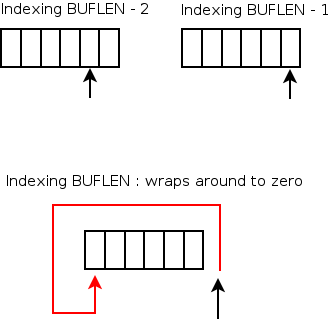

Benjamin A. Okopnik (ben at linuxgazette.net)
Tue Jul 11 08:05:03 PDT 2006
If you need to convert a plain-text file to HTML - particularly code
with nice highlighting thrown in for free - try the 'TOhtml' feature in
Vim.
All you have to do is open the file that you'd like to 'HTMLize' - if
it's code, make sure that 'syntax' is set to the correct language and is
turned on (e.g., ':set syntax=perl' and ':syntax on') - and enter ':TO'
in command mode. That's it. Vim will add the correct headers, footers,
and color tags to make it all look just the way you see it when editing
it in Vim.
There's much more to it - you can do this as XML, or with CSS instead of
physical formatting, etc. The documentation for this plugin can be seen
by entering ':help TO' from command mode.
2-cent tip: More HTML fun
Benjamin A. Okopnik (ben at linuxgazette.net)
Tue Jul 11 08:35:53 PDT 2006
Followed up by: Ben, Thomas
One of the annoyances of converting plain text to HTML is in having to
wrap every paragraph in a pair of '<p></p>' tags. This task can
be
mostly eliminated by using the substitution operator in Vim; just enter
The first expression looks for more than two newlines (possibly followed
by white space) in a row - which is how paragraphs are usually defined -
and replaces them with a newline, a paragraph closure (</p>, since
it's
the end of the previous paragraph), the content that was matched in the
expression (i.e., the newlines themselves), and a start-of-paragraph
marker (<p>) followed by another newline. The second expression just
takes care of the first and the last paragraph markers, since they're
not included in the first algorithm.
This can also be scripted as a Vim macro in your '~/.vimrc' file, e.g.
" Mark the file with HTML paragraphs
map \H :%s#\(\s*\n\)\{2,\}#\r</p>&<p>\r#g<CR>:%s#\(.*\n\)*#<p>\r&\r</p>#g<CR>
After adding the above, simply typing '\H' in command mode will do all
the paragraphing for you. Note that the second expression can be easily
modified to add an HTML header and footer to provide a browser-ready
HTML file - all in one pass!
[Thomas] - In Vim7, and with using omni-completion, it gets easier than
that. Just press:
^XO
For a tag, and it will complete it. There's lots of cool tricks like
that in Vim, but it for Vim7, which is certainly not de facto.
[[Ben]] - The last time I tried to figure out ^X mode, I got a headache. Too
many 'if's. If I want tag completion, I'll just source my little 'html.vim'
file, which includes, in part:
2cent-tip: Disabling Javascript in Firefox with a blacklist
Jason Creighton (jcreigh at gmail.com)
Wed Jul 12 19:22:28 PDT 2006
Hi,
I wanted to disable Javascript for one particular site, but the de facto
Javascript blocking extension, NoScript, works by whitelisting instead
of blacklisting. Undoubtedly better security practice, but I'm too lazy
to do that. It took me a bit of time to find the answer, so I thought
I'd post it here for posterity.
All you need to do is place the following incantation in your user.js:
...with "http://site1.com" and "http://site2.com" replaced with the
actual sites for which you want to disable Javascript, of course. This
example was taken from
http://www.mozilla.org/projects/security/components/ConfigPolicy.html,
which has many other examples and information regarding setting security
policies in Firefox.
2-cent Tip: Randomizing a playlist
Benjamin A. Okopnik (ben at linuxgazette.net)
Fri Jul 14 05:32:29 PDT 2006
Well, this isn't just for playlists - but that's what I'm playing around
with this morning, and I can't think of too many other reasons to
randomize a file (unless it's to scramble a political campaign speech;
it's very amusing to see them make just as much sense as they did
originally...)
In any case, this is one of those places where Perl comes in very useful
indeed:
vnc2swf is a cross-platform screen recording tool developed by Yusuke
Shinyama. It's a way to record your VNC session as an Adobe/Macromedia
Shockwave Flash animation format file (swf), so that you can later
play it back in Firefox, or using a standalone flash player e.g. gnash
or swfdec or gplflash. For Debian stable, to build vnc2swf proceed
something like this:
sudo apt-get install libxmu-dev
sudo apt-get install libxaw7-dev
wget http://www.unixuser.org/~euske/vnc2swf/vnc2swf-0.5.0.tar.gz
tar zxvf vnc2swf-0.5.0.tar.gz
cd vnc2swf-0.5.0
./configure
make
./vnc2swf -startrecording outfile.swf your_vnc_server:1 > outfile.html
This will bring up a VNC client which is recording everything from
your VNC server into the outfile.swf and once you quit by pressing F8
Q it will also build outfile.html which you can open in Firefox to
review your captured animation, or should I say your next blockbuster.
Update: The Python version of vnc2swf includes a nifty sliding search
bar at the bottom of your masterpiece, so that you can seek (and your
audience can skip over any less-than stellar segments of your
creation). For Debian stable, we can get it installed something like
this:
sudo apt-get install python2.3-tk
sudo apt-get install python-pygame
wget http://www.unixuser.org/~euske/vnc2swf/pyvnc2swf-0.8.2.tar.gz
tar zxvf pyvnc2swf-0.8.2.tar.gz
cd pyvnc2swf-0.8.2
./vnc2swf.py
This brings up a nice friendly dialog box, with a "Start" button,
which initiates the recording of the VNC server session, so you just
control the VNC session you're recording using your regular VNC
viewer.
2 Cent Tip: Excel files
Kapil Hari Paranjape (kapil at imsc.res.in)
Thu Jul 27 04:25:46 PDT 2006
Hello,
If (like me) you have people who send you worthwhile information
as ".xls" (MS Excel) files and you want to handle everything in
"text mode", then read on.
1. Debian package "catdoc" contains the utility "xls2csv". xls2csv
file.xls > file.csv converts the file into "comma separated
values" format. This is still not much use since people who use Excel
assume that you understand "spread sheets".
2. Debian package "sc" contains the utilities "psc" and "sc". psc -L
-k -d',' < file.csv > file.sc converts this file into the
"sc" input format. The "sc" text-mode spreadsheet can be used to edit it
("man sc" is your friend here). You can even save it to a LaTeX table.
Seems like too much work? I really have to get used to OpenOffice one
of these days!
Adding a Broadcom NetXtreme Gigabit Ethernet Driver
DR James (vas_an_nox at yahoo.com)
Tue May 30 07:31:54 PDT 2006
Answered by: Thomas
Greetings James,
How do you load a driver for an integrated network interface card in
RedHat
Enterprise? The driver is for a Broadcom NetXtreme Gigabit Ethernet
Driver.
Thank you!
[Thomas] - It's been a while, clearly. We're a "gang" now.
You'd use "modprobe" like everyone else. Ascertaining the name
of the module to load is left as an exercise to yourself. :P
[[DR James]] - Thanks Thomas!
soundcard
(Jazzyjayne69 at aol.com) Jazzyjayne69 at aol.com
Sat Jun 10 22:16:10 PDT 2006
Answered by: Ben, Marty, Rick, Thomas
I need a soundcard for win 98 download free if possible...PLEASE
help me,
Jayne
[Thomas] - No. At least, you're out of luck here. You randomly emailed
a group of us that answer questions about Linux. Note that I assume you
mean a "driver" for A soundcard, since one doesn't download soundcards
directly on the Internet. God forbid you should ask that exact question
anywhere else, but even the name of the soundcard would help.
Good luck. Your answer is anywhere but here.
[[Marty]] - Maybe he wants the schematics? ;-)
[Ben] -
--------------------------------------------------------------------------
* * * * * * * THESE ARE NOT THE DROIDS YOU'RE LOOKING FOR * * * * * * *
The address to which you have sent your query is that of The Answer Gang
for the Linux Gazette. We answer questions related to the Linux operating
system. Unrelated questions are likely to get anything ranging from a
polite answer to astonished laughter, with curmudgeonly replies being
somewhat of a norm. Good karma points are awarded to those who tell us
where they got our address and the reason they thought that we might help
with fish identification, spaceship repair, or nude snowboarding.
Spammers will be whacked with a dead trout; flames will be graded for
content, laughed at, and sent to /dev/null; amusing bits may get shared
with our readers.
Good luck with your search.
--------------------------------------------------------------------------
[Rick] - Volley:
I need a source for good pastrami on the USA West Coast.
regarding simulation of ARP
senthil kumar (senthil_sma at yahoo.co.in)
Wed Jun 28 02:36:53 PDT 2006
Answered by: Ben
Respected sir,
I am senthilkumar from India,
My question or request is please send me a Cprogram for simulation
of ARP and RARP
thanking you
[Ben] - Sure, umm... senthilkumar from India. However, we first require
your professor's name and email address; when we do someone's homework for
them, we want the credit - and the degree or the certificate for the course
as well. If you wanted those, you'd be doing the work yourself; since
you're so kind as to offer them to us instead, we can do nothing less than
accept gratefully.
Please send the information as soon as possible - I just
know everyone's fingers here are itching to start typing '#include <stdio.h>' and 'int main(int argc, char *argv[])' right away!
Problem in Linux FC5 Kernel recompiling
Deepak Mishra (mishradk at gmail.com)
Mon May 29 04:58:06 PDT 2006
Answered by: Deepak, John, Thomas
Hello,
I had a FC5 installation on my PC. now to enable RTAI i am going to
recompile the source code with the patch.
Now my question is when i do a "make modules_install install"
after compiling the kernel source, is it going to replace my old .ko files?
or my old modules will also be there?
If it is not going to replace my old .ko files then where it is going
to install the new modules and how it knows which module is for which version?
( i have disabled version support)
and if it is going to replace my existing .ko files the how my old
kernel will start if i select the old kernel from grub menu while booting?
i have searched the Internet but did not get proper answer.
Hope to get some answer for this.
Regards
Deepak
[Thomas] - [Quoting Deepak Mishra]:
> Hello,
> I had a FC5 installation on my PC. now to enable RTAI i am going to
> recompile the source code with the patch. Now my question is when i do
> a "make modules_install install" after compiling the kernel source, is
> it going to replace my old .ko files? or my old modules will also be
> there?
Assuming you have a copy of this kernel already installed, the files will just
get installed over the top of it.
> If it is not going to replace my old .ko files then where it is going
> to install the new modules and how it knows which module is for which
> version? ( i have disabled version support)
But by disabling "version support" that doesn't preclude the fact
that files are going to be installed to /lib/modules/$(uname -r).
> and if it is going to replace my existing .ko files the how my old
> kernel will start if i select the old kernel from grub menu while
> booting?
Depends how you configure grub.
I am not sure of what answer you're after, or indeed, why it matters.
[[Deepak]] - Hi Thomas,
Thank you very much for answering my problem.. Actually i want to ask one thing
is that, I have already compiled a stable kernel. It is working fine.
Now i have made changes in to some important parts. In my previous kernel
also I had compiled this code as a module and now after making some modifications
I am recompiling the kernel with a different version.
I think after installing the new compiled kernel and its modules, it will
over write my my previous module.
[[[Thomas]]] - Right. Well, the heuristic you're using is that if you're changing
some part of your kernel configuration which is for the same version as the
kernel you're currently using that you shift
/lib/modules/$(uname -r)
out of the way before you issue a "make install".
[[Deepak]] - After booting from my new kernel I found that my new module
is not working as per my requirement. At this point if I boot my system
with the previous kernel, can I go back to my old working stable setup? or
I have to recompile my code after removing my code?
[[[Thomas]]] - Assuming you do the above, it's generally safer to issue a
"depmod -a" command. This typically happens during startup. Note
that if what you're compiling is just modules for the current running
kernel, you theoretically only need install those modules, as in:
sudo make modules_install sudo depmod -a modprobe some_module_name
[[Deepak]] - I am new in this Linux kernel compilation. so please advice me.
[[[Thomas]]] - It's a topic that has come up before, and I believe the
kernelnewbies.org site is quite good also.
[[[[Deepak]]]] - Thank You very much for your advice and suggestions.
[John] - I'm not 100% sure of it, but I think the following method will not
overwrite your existing modules:
- In the kernel configuration menu, choose "General setup"
- Then "Local version - append to kernel release"
- Input a string (64 char length max, but you'll probably want to make it quite
a bit shorter than that).
Then after booting from that kernel, "uname" command will
return the string you entered in the step above appended to the usual
kernel version number. The modules corresponding to that kernel should be
installed under /lib/modules/KVER-localVersion where localVersion is the
string you entered during kernel configuration.
I say I'm not 100% sure here because I haven't used that method since
trying it once back in the days of kernel 2.0 or 2.2 at least 8 yrs ago,
and my memory of it is a bit tenuous.
Blue line
Alice Perrault (aaperrault at adelphia.net)
Tue May 30 17:04:31 PDT 2006
Answered by: Ben, Brian, Dale, Thomas
Why do I sometimes get a vertical blue line on the left side of my message.
Of course, it wouldn't happen this time, when I want it to show.
Many thanks for any answers you can give to me. ~~ Alice
[Thomas] - In what? Email? Which client are you using? Is this blue line rendered
with the text you're reading? Is it some form of colourisation based on syntax?
You need to be much more specific -- you don't give us much to go on.
[Dale] - Might be a form of quoting a previous message, as in a reply. As Mr.
Adam says, the answer is in no small measure dependent upon the context of your
question.
On another note, when posting to a list like this one, it is generally considered
proper protocol (at least in my experience) to send the message as plain text.
Many folks use text-based mail clients like Mutt or Pine and Rich Text/HTML
messages can be inconvenient to deal with.
[[Thomas]] - You can call me Thomas.
What's even better "protocol" is people learning NOT to top-post.
[[[Dale]]] - Bad habit I picked up long ago.... sorry.
[Ben] - Alice, I'm going to take a wild guess and say that you're using 0utlook
under Wind0ws - which uses a blue line to denote quoted text. If this is the
case, I hope that the above answers your question, because we normally don't
answer Windows questions: The Answer Gang is a part of the Linux Gazette, and
answers questions about Linux.
If I've guessed wrong, then I invite you to read "Asking Questions of
The Answer Gang" at http://linuxgazette.net/tag/ask-the-gang.html and
write us back - hopefully with your question rephrased as per the guidelines
(i.e., including sufficient information), and we'll see if we can help.
[[Brian]] - I get a blue line for quoted text in Mozilla Thunderbird under Linux
when T'bird is being "polite" and rendering HTML email instead of
doing everything plaintext as I instruct it. To be more explicit, when I'm looking
at a reply to an HTML email in Mozilla Thunderbird in the message pane, the
bits that are quoted from prior espondent(s) are bordered on the left with a
vertical graphical line. The color of that line changes with depth of quoting...
For example, in a later message in this thread, where Dale quotes Thomas,
there is a blue line down the left side. Where Dale quotes Thomas quoting
Dale, there is a DarkRed line inside the blue line, indicating two levels
of quoting. In a plaintext message, I would instead see two greater-than symbols
(that is, '>').
It is most irksome to me that these lines don't revert to plaintext quoting
methods, even when I explicitly instruct T'bird to display the messages in
plaintext. The TLA "WTF" sproings to mind...
Colouring $PS1...
Mahesh Aravind (ra_mahesh at yahoo.com)
Sat May 13 03:30:05 PDT 2006
Answered by: Ben, Kapil, Martin, Thomas
Dear fellow Linuxers,
I had recently been fooling around with the colouring the bash(1) $PS1
variable for making $PS1 really colurful prompt. I found myself reading
the console_codes(4) man page (and the inevitable bash(1) man page, too)
from time to time.
This was a pain. As for a newbie, s/he can't quickly grasp the concept
of DEC escape codes, and differentiate VT220 codes from ECMA control codes.
So to help the newbies, I decided to code up a simple(?!) shell script from
which the desired colour codes could be looked up as X,Y coordinates.
This is no great hack. And I concentrated only on the `Normal' and
`Bold' category of codes, since `Underline' and `Blink' attributes couldn't
always be handled by all VCs (of course, some xterm(1x) could interpret
them).
In the script, the Y axis denotes the foreground colour ranges, and the
X axis denotes the background colour ranges.
Well, the standard disclaimer applies. Any suggestions and corrections
are welcome (all flames to /dev/null). I'm releasing this script as
GPL.
No worries,
Mahesh Aravind
PS: If you want any help, do an "nl -ba colors.sh". ;-)
[Ben] - Very nicely done, Mahesh! I wrote a similar function in my Bash tutorial;
I've tweaked it quite a lot since then. Yours is prettier, though, and includes
the 'bold' versions.
colsel () # Color selector - iterates through a $TERM's color choices
{
trap 'reset' 0 # Reset on exit
n=47 # Max foreground color value
while [ "$n" -gt 39 ]
do
m=37 # Max background color value
while [ "$m" -gt 29 ]
do
[ `expr $m % 20` -eq 0 ] && echo -e '\E[$40;1m|'
echo -en "\E[$m;${n}m| $n $m \E[$40;1m"
m=`expr $m - 1`
done
n=`expr $n - 1`
echo -e '\E[$40;1m|'
done
}
Conversely, you could just use Moshe
Jacobson's "color" program; it'll even show all the colors in much
the same sort of layout when invoked with the '--list' option.
> Well, the standard disclaimer applies. Any suggestions and corrections
> are welcome (all flames to /dev/null).
It may already be filled up; that's where we're sending ours...
> PS: If you want any help, do an "nl -ba colors.sh". ;-)
I've always found 'vi' to be just as useful. :)
[[Thomas]] - I've always avoid the use of escape codes in favour of tput(1)
-- at least then it works remotely, too.
[[[Ben]]] - How would you use 'tput' to set colors? I've just run 'infocmp', and
it doesn't show anything related to doing so.
[[[[Thomas]]]] - tput(1) can query the terminal database, hence:
tput setaf 1; echo this is red
tput setaf 2; echo this is green
tput setaf 0; echo now we are back in black
etc...
[[[[[Ben]]]]] - Ok, I got you. Even though "tput" options aren't
listed anywhere near the "tput" man page (for anyone interested,
they're in "man 5 terminfo"), and there is a huge number of them
with mostly-cryptic explanations of what they do, this is still an
excellent tip.
So -
for n in `seq 0 7`
do
for m in `seq 0 7`
do
tput setab $n # Set background
tput setaf $m # Set foreground
echo -n "$m $n"
tput op # Reset to original color pair
echo -n "|"
done
echo
done
The data displayed can be used with 'tput' invocations to set the colors
shown, much like Mahesh's script, but would be term independent. Pretty
sweet...
[[Martin]] - Just to let you guys know that there is a BASH Prompt HOWTO
at tldp.org which gives you more info on colouring your
prompts and putting other things in there too... ;)
[[[Ben]]] - I recall reading it a couple of years ago. Unless it's been
updated, it uses escape codes - which, as Thomas pointed out, aren't
necessarily term-independent.
[[[Mahesh]]] - [Quoting Thomas]:
> I've always avoid the use of escape codes in favour of tput(1) -- at
> least then it works remotely, too.
Yeah, but this was inspired by reading the console_codes(4) man page and
seq(1) info page. Combining the two resulted in a useful(?) script.
[[[[Thomas]]]] - There's nothing wrong with it, but hard-coding escape codes
is going to turn around and bite you on the arse before long. Some
terminals don't/can't render escape codes properly.
[[[[[Mahesh]]]]] - Just out of curiosity, how would a modified script using tput(1)
would be able to print the colour coordinates to the o/p?
[[[[[[Ben]]]]]] - Just like using escape codes does - except you don't use the
escape codes. :) The point to 'tput' is that it actually queries the
terminfo database and outputs the correct escape codes for a given
terminal. Using explicit escape codes will work much of the time - after
all, many Un*x terminals use the same ones - but will fail miserably on
terminals that use something different.
If you're asking about an example, here's one:
tput smso # Turn on bold mode
echo This should print in bold
tput rmso # Turn it off
On the other hand, if you use these a lot, you're going to get tired of
typing - so it makes sense to request them once and save them:
a=`tput smso`
b=`tput rmso`
echo "${a}This should print in bold$b"
[[[[[[Thomas]]]]]] - The o/p being what or whom? (Abbreviations, unless they're generally
well-recognised, are pretty much useless for communicative writing).
[[[[[[[Mahesh]]]]]]] - Wow... looks like you're in a hot mood! (uh, read:
angry)
[[[[[[[[Thomas]]]]]]]] - Far from it. Welcome to the ambiguity of email.
[[[[[[[[Ben]]]]]]]] - Nah. The last time Thomas got angry... well, you heard of what
happened at Troy, right? When he gets angry, it's obvious (although the
people to whom it's obvious may not have much time to regret it.)
In other words, don't worry about it. Unless you've already
been slaughtered and buried in an unmarked grave - in which case, disregard
everything I've said. :)
[[[[[[[Mahesh]]]]]]] - o/p == out put
[[[[[[[[Thomas]]]]]]]] - Ah, I see. In the English language, "output" is all one
word.
[[[[[[[[[Mahesh]]]]]]]]] - Here's some more that I'll be (or someone else'll be) using
w/o == without
h/w == hardware
s/w == software
s/o == Significant Other (*not* son of)
...
[[[[[[[[[[Kapil]]]]]]]]]] - Why not "son of"?
Anyway, you seem to be missing the point. It is generally up
to the communicator (in this case you) to ensure that abbreviations that
you use are known to the communicatees (in this case not just Thomas or TAG
but possibly other readers of LG).
Otherwise it is rather like sending an ogg file to someone who uses a
Macintosh or a Word file to me. The recipient might be able to figure out
what you are trying to say---but might press the delete button
instead.
[[[[[[[Mahesh]]]]]]] - How do you get the colour coordinates using tput?
[[[[[[[[Thomas]]]]]]]] - Coordinates for what, or where? All tput does is query the
terminfo database.
[[[[[[[[[Mahesh]]]]]]]]] - Uh, ... fotget it!
[[[[[Mahesh]]]]] - And how would you create (a hacked up version) of files like, say,
/etc/issue using tput w/o using hard coded escape codes?
[[[[[[Ben]]]]]] - Those are not terminal codes, they're 'getty'-specific escape
codes; no relation between the two. Yes, it's possible to use ASCII escapes
to create lots of special effects; heck, I used to do that myself, back in
the early '80s for BBS "post-login" screens. I just seriously doubt that
this hack from 25 year ago is still in any way "cool", or even interesting
- and this is filtered through the fact that it's guaranteed to break on
some percentage of terminals.
As a side note, I suspect that 'getty' replicates a fair
amount of 'tput' functionality, since it has to deal with terminals at that
level.
[[[[[[Thomas]]]]]] - You probably wouldn't, which is why the initscript in Gentoo
and the like waste massive amounts of code in adding nice pretty colours
which last for lesss than ten seconds on the screen, provide next to no
manner in terms of usefulness and will fall over and die spectacularly on
different terminals. Is this gain worth it? Of course not.
[[[[[[[Mahesh]]]]]]] - I was thinking of "private" use... in /etc/issue not
/etc/issue.net?
[[[[[[[[Thomas]]]]]]]] - That depends on your distribution.
[[[[[[[[[Mahesh]]]]]]]]] - Arrgh! I don't seem to get my idea thru to you. See, when
you feel like creating an /etc/issue that'll emit your '\l' getty escape
codes using so-called hard-coded escape colour codes like
"^[[33;1m\l^[[0m", how can tput come to the rescue? Like you code up a
shell script to o/p (err.. output, sorry) a /tmp/issue that'll have correct
escape codes querried form the terminfo database.
[[[[[[[[[[Kapil]]]]]]]]]] - As Ben pointed out you can indeed do that. For example, you
can have /etc/default/issue which is used/parsed by
/etc/init.d/generate_issue to generate the "real" /etc/issue by using the
terminal settings appropriate to /dev/console (which may or may not be a
serial console). Beware that this /etc/issue will break on some terminals
that are "getty"-ed via serial line.
[[[[[[[Mahesh]]]]]]] - like it'd be useful to have ^[[31;1m\n^[[0m to see your hostname in
bright red or something...
[[[[[[[[Thomas]]]]]]]] - Again, can be achieved via tput (you've been shown examples
of this.)
[[[[[[[[[Mahesh]]]]]]]]] - Can tput escape codes be interpretted by getty?
[[[[[[[[[[Kapil]]]]]]]]]] - That "getty" only understands escape codes in /etc/issue
instead of a generic description like that given by terminfo or slang is
surely a fault of "getty"! Hack "getty" to fix this problem.
[[[[[[[[Ben]]]]]]]] - If I was going to do that - which I would not - I would
generate '/etc/issue' via a script, with escape sequences created by
'tput'. However, the overriding problem that can't be handled at this
level of interaction is that the console from which the user connects to
your system is completely arbitrary - so there's no way for you to know
what their correct escape sequences are. In other words, if (e.g.) a
Solaris or a DOS user connects to you using a console that uses something
different, all they're going to see is a bloody mess of square brackets and
other line noise on their screen - and you can't prevent that from
happening.
*This* is why it's a really bad idea to do those color tricks in
'/etc/issue'. It's not because anybody's trying to prevent you from
being cool; it's because you will inevitably make someone else's life
harder by doing so.
[[[[[Mahesh]]]]] - I don't know, can u help?
[[[[[[Thomas]]]]]] - Nope, since I don't understand your question.
[[[[[[[Mahesh]]]]]]] - Like finding the codes o/p'd (err, outputted) by tput (maybe
you wouldn't want it, but it could be found, isn't it?
[[[[[[[[Ben]]]]]]]] - Err, have you considered the word 'printed'? It's a perfectly
good one, and causes no harm to anyone as far as I know.
[ In case you're still missing it: clarity, in a technical discussion,
is far more important than saving a few keystrokes. WRITE
OUT what you're trying to say to avoid confusion. ]
[[[[[[[[[[Ben]]]]]]]]]] - [ TAG forcibly re-CC'd. Mahesh, please leave the list in the
CCs when replying; not doing so is considered rude. ]
[[[[[[[[[Mahesh]]]]]]]]] - Sorry, ed (warning: I may not be employed to write any
public-readable stuff)
I wrote this, because I recently got a job offer from a
leading magazine in India, to work as an in-house Linux Technical writer.
[[[[[[[[[[Ben]]]]]]]]]] - Much more of a reason to communicate clearly, then! Now,
it's not just an adventure - it's your JOB...
(Not to carry the anvil too far, but some non-USians might miss it: the
US Army's long-time advertising slogan was "It's not just a job - it's an
adventure." These days, they've changed it to "An army of one" - presumably
since anyone signing up these days will get ALL the "adventures" they
never wanted.)
[[[Mahesh]]] - I even thought about fitting getopts in to select bold, underline,
blink, etc.
[[[[Thomas]]]] - Depends what you want out of your script.
[[[[[Mahesh]]]]] - To help the newbies ease the complications...
[[[[[[Thomas]]]]]] - Pffft. Help them by teaching them, not dazzling their retenas
with colours.
[[[[[[[Mahesh]]]]]]] - I was meaning those brainless twits who can't remeber all those
escape codes. ("dazzling their retenas" -- is that a problem with my script?)
[[[[[[[[Thomas]]]]]]]] - You seem to be under the impression that your script is
somehow lacking and isn't working. That's not true. Your script does work
-- for some terminals. When you sent this script in to TAG, did think it
was somehow not open for discussion? Constructive criticism such as the
advice myself and Ben have been giving you is there to aid you; and not to
pick any holes in your script.
[[[[[[[[[Mahesh]]]]]]]]] - Thomas (if I can call you by ur first name), my primary
intention of writing the script was to find out the correct colour
sequences to colour up the various getty control codes (\l, \m, \n) etc.,
in /etc/issue and for ${PS1}.
So I can take in any suggestions to make it more useful
(beware, I'm working on v2.1 of the same) ...
useful, in the sense, anyone who feels like colouring their /etc/issue
or /etc/motd can look up this script and decide on what to do (and what not
to do.)
[[[[[[[[[[Kapil]]]]]]]]]] - As far as "motd" is concerned there is no short cut. You
need to hack at "login" itself to make sure that it "knows" terminfo or
slang in order that it can put out a colourful message of the day
regardless of which terminal a user logs in from.
[[[Mahesh]]] - True, tput would have made it portable (a portable shell
script???!!!).
[[[[Thomas]]]] - Careful -- the shell script itself already isn't portable (you
use 'seq' which isn't on every system, think *BSD for instance), but it's portable
in the sense that tput(1) is always guaranteed to work, where hard-coding escape
sequences might not.
There's nothing wrong with your script, I was merely pointing out that tput(1)
is by far the "better" choice when you wish to use colour for things
such as prompts and the like.
[[[[[Mahesh]]]]] - Hey, I think the escape codes are handled by Linux console drivers,
so how can they fail to work. At least thats what I understood after reading
the man pages.
[[[[[[Thomas]]]]]] - No, they're handled by terminals which read the terminfo and termcap
databases.
[[[[[[[Mahesh]]]]]]] - I think I misinterpreted what was in console_codes(4), can u
correct me? I thought it said something like the Linux display driver
handled the escape codes. Thanks.
[[[[[[[[Thomas]]]]]]]] - No, it's the terminal that interprets them. Note from
console_codes(4):
It is generally not good practice to hard-wire terminal controls
into programs. Linux supports a terminfo(5) database of terminal
capabili- ties. Rather than emitting console escape sequences by hand,
you will almost always want to use a terminfo-aware screen library or
utility such as ncurses(3), tput(1), or reset(1).
[[[[[[[[[Mahesh]]]]]]]]] - Thanks, I might have missed it.
And one more thing, you don't mind me using this in my private
/etc/issue, right? At least, decapitation is not an option for someone
using hard coded escape sequences!
Thanks for ur time...
[[[[[Mahesh]]]]] - does the Linux cosole drivers in anyway deal with the
terminfo/termcap facilities?
[[Mahesh]] - Ben, I'm happy I got a mail from LG. Thanks for mailing in..
[Quoting Ben]:
> colsel () # Color selector - iterates through a $TERM's color choices
> {
> trap 'reset' 0 # Reset on exit
I didn't think of a trap ... sue me ;-)
[[[Ben]]] - I found that unless I used it, 'Ctrl-C'ing out of the script would
often leave the xterm in some weird color mode. NOT a desirable outcome. :)
[[Mahesh]] - [Quoting Ben]:
> > Well, the standard disclaimer applies. Any suggestions and corrections
> > are welcome (all flames to /dev/null).
>
> It may already be filled up; that's where we're sending ours...
I have written a script that will empty /dev/null the same way with /tmp at
each boot time!!! :-D
[[[Ben]]] - Let me guess:
# Save the old one - just in case, y'know...
ext=0
while [ -f foo.$ext ]; do ((ext+=1)); done;
mv /dev/null /dev/null.$ext
# Who needs that weird 'mknod' thing, anyway?
# And by the way, why is my root partition all filled up?
touch /dev/null
:)
[[Mahesh]] - [Quoting Ben]:
> > > PS: If you want any help, do an "nl -ba colors.sh". ;-)
> >
> > I've always found 'vi' to be just as useful. :)
But do vi show line numbers (at default)
[[[Ben]]] - It does if you've got 'set nu' in your .exrc file.
[Kapil] - The discussion on pretty-printing of files naturally led to
the discussion in the Unix-Hater's book (UHB) on how curses and terminfo
are "twisted" technologies. According to the UHB the "right" way is that
files should not be "streams of bytes" but should be "objects" which should
(in particular) encode all pretty-printing information.
Interesting ... wonder if there is an implementation.
[[[[[[[[[Mahesh]]]]]]]]] - PS: Ben, I shoulda said this earlier: I learnt (well, most
of) shell scripting thru a guide someone printed occassionaly in LG (I
think his name was Ben Okopnik or something). It was a great guide. So
you know whom to blame for my shell mistakes (OK, not escape-sequence
mistakes ;) )
[[[[[[[[[[Ben]]]]]]]]]] - [laugh] My sins come back to haunt me. I'm glad that you found
it useful, Mahesh (although I specifically remember using 'tput' in that
series for "jazzing up" output in programs.)
Adding bogofilter to Exim4: ""doesn't work"".
Thomas Adam (thomas at edulinux.homeunix.org)
Fri Jun 2 06:03:09 PDT 2006
Answered by: Ben, Neil, Rick, Thomas
Hello,
At the moment my anti-spam measures are sub-optimal. The filtering of
spam happens at fetchmail time via procmail into ~/Mail/spam. This used
to be OK a few years ago as my address was relatively unknown. But now I
must get at least anything between 40 - 80 spam emails a day. It's
driving me nuts, so I figured it's time to do something at SMTP time.
I'm running Exim4 from Debian stable (which by definition means it's the
Debianised configuration of Exim -- something I am still undecided as to
whether this is a good idea or not). From my own knowledge about Exim and
how emails are relayed at SMTP time, I think I understand how this all
fits in, but I'll just make sure, as I don't understand why I get the
error I do, and whether there's anything else I ought to be doing. (Rick,
this is surely one for you... :P)
I'm not using the whole "split-file" configuration thing which Debian
seems to like. Instead, if I want to make any changes, I just edit
/etc/exim4/exim4.conf.template . Now, into that file, I have added two
things. The first thing is the router. I suppose this ought to come
after the DNS stuff. Hence I added:
I've added that near the end of the template file -- I don't
believe the
position of the transport really matters. Indeed, having done that and
running:
... produces no errors. However, sending a test email from my
gmail
account to ''thomas at edulinux.homeunix.org'' results in the following
error:
2006-06-02 04:54:13 1Fm0jl-0006a4-8V ** thomas at edulinux.homeunix.org
R=bogo_router T=bogo_transport: Child process of bogo_transport transport
returned 2 from command: /usr/sbin/exim4
... indeed, the above comes from running eximon. Despite that
error
message eximon seems to think delivery has happened. This may indeed be
the case but shortly after "delivery", the message is frozen, and the
MAILER-DAEMON helpfully sends me back an email to my gmail account
saying:
An error was detected while processing a file of BSMTP input.
The error message was:
500 Command unrecognized
The SMTP transaction started in line 0.
The error was detected in line 1.
The SMTP command at fault was:
... so I've obviously balled something up, somewhere. Googling
around a
bit seems to reveal the configuration as I have it at the moment works for
other people. I can't see in this situation what's wrong. I'm not even
sure I know/understand what "BSMTP" is. I tried setting that to false in
the transport section for bogofilter, but that was, err, clearly the wrong
thing to do.
Can anyone else see what I've not done?
One of the reasons I'm not using the Exim-SA package or spamassassin in
general is because it's a pig of a program and reduces poor fluffy (a P166
that acts as the kitchen sink) to a mere crawl. Since bogofilter
seems to work just fine on my workstation, and that other people have
seemingly integrated it into Exim makes me want to try the same.
Thanks in Advance.
-- Thomas Adam
[Ben] - Good idea; I'm slightly envious, given Rick's detailed
expositions on it here. I can't implement the same thing due to lack of
good network connectivity; that is the one requirement I do not meet for
doing my my own SMTP.
I might have a little something to contribute, too - I've
never done what you're talking about, but I've played with Exim extensively
via its conffiles.
First, I'd do some general troubleshooting as described in the Exim
manual (/usr/share/doc/exim/spec.txt.gz on my machine; I'm still using
Exim 3, though.) Section 4.15, "Testing", covers all the basics:
'exim -bV' for a static test, 'exim -v -bt <localuser>' for local and
'exim -v -bt <remoteuser>' for remote delivery, "SMTP conversation",
i.e.
exim postmaster at your.domain
From: user at your.domain
To: postmaster at your.domain
Subject: Testing Exim
This is a test message.
^D
for a full delivery test, etc. Then there's my personal favorite,
'exim -d9 -M <message-id>' - turning on max_debug and vgrepping through
lots of log messages... seriously, that could be very useful.
Especially if you turn it on in your transport section and try that
Gmail interaction again.
Give it a shot and let's see what you get!
[[Thomas]] - Hey, Ben -- replying via webmail, since I'm leaving my exim process
on my server running in debug mode, and with the bogo stuff turned on, nothing
gets delivered. :P
[[[Ben]]] - That's the problem with mail problems - the thing with the
problem is the thing you need to fix the problem!
[[Thomas]] - I have heard rumours that Exim works quite well in disconnected
setups like yours, although I can't say how good/bad that is.
[[[Ben]]] - It works well WRT delivery, etc.; it's bloody awful if you want to
run SMTP-time checking - since that requires a reasonably fast network connection,
otherwise the per-mail processing time goes into orbit.
[[Thomas]] - Ok -- the static tests fail. In fact, any test with the bogo-filter
stuff enabled just barfs (same error as shown in the file in the URL quoted
further down, BTW).
[[[Ben]]] - Probably not an Exim configuration problem, then.
[[Thomas]] - [quoting Ben]
'exim -d9 -M <message-id>' - turning on max_debug and vgrepping through
OK -- it seems that the "-d9" idea isn't applicable on Exim 4. Looking in
its manpage, there seems to be "-d all" which sounded promising, but which
just held up Exim and wouldn't do anything after that. So I used the following
command:
sudo exim4 -d -M 1Fn2PM-0007BB-EV 2<&1 | tee /tmp/exim.out
... that message ID is of an email I had sent on the localhost -- the `same
error happens from anywhere. I shan't paste the output from that command in
here directly. Instead you can see the output here.
[[[Ben]]] - I note a couple of questionable log messages there - e.g.,
internal_search_find: file="/etc/aliases"
type=lsearch key="n6tadam"
file lookup required for n6tadam
in /etc/aliases
lookup failed
expanded:
file is not a filter file
parse_forward_list:
system_aliases router declined for n6tadam at edulinux.homeunix.org
which may or may not be of concern for you; however, the important bits
are obviously toward the end:
calling bogo_router router
bogo_router router called for n6tadam at edulinux.homeunix.org
domain = edulinux.homeunix.org
set transport bogo_transport
queued for bogo_transport transport: local_part = n6tadam
domain = edulinux.homeunix.org
errors_to=NULL
That last line should probably be redefined for better troubleshooting.
domain_data=NULL localpart_data=NULL
routed by bogo_router router
envelope to: n6tadam at edulinux.homeunix.org
transport: bogo_transport
>>>>>>>>>>>>>>>>>>>>>>>>>>>>>>>>>>>>>>>>>>>>>>>>>>>>>>
After routing:
Local deliveries:
n6tadam at edulinux.homeunix.org
So far, so good.
Remote deliveries:
Failed addresses:
Deferred addresses:
search_tidyup called
>>>>>>>>>>>>>>>> Local
deliveries >>>>>>>>>>>>>>>>
--------> n6tadam at edulinux.homeunix.org <--------
locking /var/spool/exim4/db/retry.lockfile
locked /var/spool/exim4/db/retry.lockfile
opened hints database /var/spool/exim4/db/retry: flags=0
dbfn_read: key=T:n6tadam at edulinux.homeunix.org
no retry record exists
search_tidyup called
changed uid/gid: local delivery to n6tadam <n6tadam at
edulinux.homeunix.org> transport=bogo_transport
uid=8 gid=8 pid=28344
auxiliary group list: <none>
home=/tmp current=/tmp
set_process_info: 28344 delivering 1Fn2PM-0007BB-EV to n6tadam using
bogo_transport
direct command:
argv[0] = /usr/bin/bogofilter
argv[1] = -d
argv[2] = /etc/bogofilter
argv[3] = -l
argv[4] = -p
argv[5] = -e
argv[6] = -u
direct command after expansion:
argv[0] = /usr/bin/bogofilter
argv[1] = -d
argv[2] = /etc/bogofilter
argv[3] = -l
argv[4] = -p
argv[5] = -e
argv[6] = -u
actually works? I'd do it with the options spelled out, exactly as Exim
sees it.
bogo_transport transport entered
direct command:
argv[0] = /usr/sbin/exim4
argv[1] = -oMr
argv[2] = bogodone
argv[3] = -bS
direct command after expansion:
argv[0] = /usr/sbin/exim4
argv[1] = -oMr
argv[2] = bogodone
argv[3] = -bS
Ditto here. Obviously, these two are hooked up via a pipe - so that's
the manual process to try.
Writing message to pipe
writing data block fd=10 size=13 timeout=3600
writing data block fd=10 size=40 timeout=3600
writing data block fd=10 size=5 timeout=3600
process 28347 running as transport filter: write=11 read=12
added header line(s):
X-Bogofilterd: true---
process 28348 writing to transport filter
copying from the filter
set_process_info: 28346 reading output from |/usr/sbin/exim4 -oMr bogodone
-bS
Just for grins... what does Exim return when run that way? '$?' should
tell you.
writing data block fd=11 size=2252 timeout=3600
waiting for filter process
filter process returned 3
waiting for writing process
end of filtering transport writing: yield=0
errno=-24 more_errno=3
Whoops. I wonder what that means. You might want to Google for it...
incidentally, I just noticed that my '/usr/share/doc/exim' directory
contains a discussion of filters and how to use them. Again, this is
Exim3 - but you might have a parallel document that describes the
specifics, and might be worth checking out.
search_tidyup called
bogo_transport transport returned PANIC for n6tadam at
edulinux.homeunix.org
post-process n6tadam at edulinux.homeunix.org (9)
LOG: MAIN
<n6tadam at edulinux.homeunix.org>: bogo_transport transport
output: An
error was detected while processing a file of BSMTP input.
LOG: MAIN PANIC
== n6tadam at edulinux.homeunix.org <thomas at
edulinux.homeunix.org>
R=bogo_router T=bogo_transport defer (-24): Filter process failure
2006-06-05 01:17:30 1Fn2PM-0007BB-EV == n6tadam at edulinux.homeunix.org
<thomas at edulinux.homeunix.org> R=bogo_router T=bogo_transport
defer
(-24): Filter process failure
2006-06-05 01:17:30 1Fn2PM-0007BB-EV == n6tadam at edulinux.homeunix.org
<thomas at edulinux.homeunix.org> R=bogo_router T=bogo_transport
defer
(-24): Filter process failure
exim: could not open panic log - aborting: see message(s) above
Hmm, looks like another place where you could get troubleshooting info.
Do you have a '/var/log/exim/paniclog' file on your system?
So, I'd run through all of the above stuff and see what shakes out. If
you don't get definitive results from the above (and I'm sorta betting
on testing the piped progs), then feel free to describe what you've got
and we'll bang on it some more. :)
[[Thomas]] - I'm not turning up many hits on Google which sheds much light on
this -- despite triple checking the existing filter for bogo_filter matches
the general concensus which purportedly works on other's machines; and it does
match.
[Neil] - [Quoting Thomas]:
> 2006-06-02 04:54:13 1Fm0jl-0006a4-8V ** thomas at edulinux.homeunix.org
> R=bogo_router T=bogo_transport: Child process of bogo_transport transport
> returned 2 from command: /usr/sbin/exim4
Someone else had the same problem. I'm not sure that the answer he got was
very useful :-(
FWIW according to http://bogofilter.sourceforge.net/man_page.shtml return
values are "0 for spam; 1 for non-spam; 2 for unsure ; 3 for I/O or other
errors.
If both -p and -e are used, the return values are: 0 for spam or non-spam;
3 for I/O or other errors."
It's interesting that you seem to be using -p and -e, but still get a return
value of 2.
According to http://exim.org/exim-html-4.62/doc/html/spec_html/ch29.html#id2641142:
"If the command exits with a non-zero return code, the delivery is deemed
to have failed, unless either the ignore_status option is set (in which case
the return code is treated as zero), or the return code is one of those listed
in the temp_errors option, which are interpreted as meaning “try
again later”."
So the problem would appear to be the return code of 2 from bogofilter, which
AFAICS you should not be getting.
[Rick] - [Quoting Thomas]:
> I'm running Exim4 from Debian stable (which by definition means it's the
> Debianised configuration of Exim -- something I am still undecided as to
> whether this is a good idea or not).
My middle initial "A" honestly doesn't stand for "Ambivalent", but I
have ongoing doubts about that too -- and I rely on it. ;->
> From my own knowledge about Exim and
> how emails are relayed at SMTP time, I think I understand how this all
> fits in, but I'll just make sure, as I don't understand why I get the
> error I do, and whether there's anything else I ought to be doing.
> (Rick, this is surely one for you... :P)
OK, but I'm a bit of a seat-of-my-pants flier, when it comes to MTA
configuration. I've never had a machine set up for experimentation;
anything I attempt is on a production mail system, where people call and
scream at me if I break anything. Accordingly, opportunities for
tinkering have been few, and cautious.
> I'm not using the whole "split-file" configuration thing which Debian
> seems to like. Instead, if I want to make any changes, I just edit
> /etc/exim4/exim4.conf.template .
That's one of the things on which I have greatest ambivalence, actually.
The split-file option is best for long-term maintenance, in that the
system can incrementally upgrade the parts you haven't touched, while
leaving alone others. On the other hand, the single-file option's
significantly easier to grok.
> Now, into that file, I have added two
> things. The first thing is the router. I suppose this ought to come
> after the DNS stuff. Hence I added:
> bogo_router:
> domains = +local_domains
> no_verify
> condition = ${if !eq {$received_protocol}{bogodone} {1}{0}}
> driver = accept
> transport = bogo_transport
Hmm, there used to be a third-party modification for Exim4 called
Exiscan (http://duncanthrax.net/exiscan-acl/). I see that it's now
merged into Exim4 mainline code -- but you might double-check that your
chosen Debian package includes that functionality. E.g., it might be that
package exim4-daemon-light doesn't, but exim4-daemon-heavy does.
The Exiscan patch added support for a broad range of content-scanning
(virus, spam, other), while Marc Merlin's SA-Exim patch is specialised
for SpamAssassin integration and (I think) SA-specific. Exiscan's most
recent versions (dubbed Exiscan-ACL) work by adding additional functions
to Exim4's DATA ACL, while also providing an entirely new ACL
(acl_smtp_mime) called for each MIME part in a message. You might want
to look into that approach, rather than attempting to hack transports
and routers.
> One of the reasons I'm not using the Exim-SA package or spamassassin in
> general is because it's a pig of a program and reduces poor fluffy (a P166
> that acts as the kitchen sink) to a mere crawl.
However, note that one of the key aims of an SA-Exim/SpamAssassin setup
is to use SA as little as possible. If you start out (as I did) with
J.P. Boggis's EximConfig set of default ACLs / configuration files, most
of the heavy lifting is performed not by SA but rather by the Exim4 ACLs
that handle the mail first, and reject most of the junkmail.
Starting to explore the Linux kernel code
Deepak Mishra (mishradk at gmail.com)
Thu Jun 8 15:05:15 PDT 2006
Answered by: Deepak, John, Lew, Marty, Ramon, Rick, Thomas
Hello Everyone ( Answer Gang), I have gone through the basics of OS and
now trying to explore and understand the linux kernel code. I am
confused from where I should start. Just to make my life easier, I am
thinking to to document the function calls from the login prompt to bash
or any shell prompt.
Then I want to go in reverse direction and find out how I came up to a
log in prompt.
As at log in prompt I see <hostname> login: so I tried to grep for the
"login:" in .c files. but really could not find the the proper location
in the source code. I have a 2.6.15-01.2054_FC5 source code.
Am very very interested to understand this code. I understand C language
quite well.
I have 3 questions.
1. Is this approach to understand the linux kernel code all right?
2. If any one can give me some hint where I can find the login related
code or where I should start .. I will be very glad.
3. Is there any documentation available which I can use as reference?
thank you verry much.
Regards
Deepak
[Ramon] - Although it sounds like a nice idea to start with linux kernel
source code, logging in doesn't really use the kernel code much. (Or it
does but in a very different way then you seem to assume)
You might want to start by having a look at the linux bootproces and
understanding the role that the kernel fills in this proces.
Recently someone published a nice overview of the boot process on the
ibm
developerworks site
Additionally I always found the linux from scratch project an excellent
resource on the ecosystem that the linux kernel + the (GNU) userland
tools
& programs really is.
> I have 3 questions.
> 1. Is this approach to understand the linux kernel code all right?
No, see above. Basically the kernel handles access to the hardware
resources in an uniform way and offers hooks for user-space programs to
get access to these resources. You will find that the login process is
handled by a program that calls the kernel to get access to the
appropriate resource (filesystem, screen, keyboard, serial line, whatever)
> 2. If any one can give me some hint where I can find the login related
> code or where I should start .. I will be very glad.
> 3. Is there any documentation available which I can use as reference?
See above.
If you have a spare machine lying around somewhere that you can use I
can really recommend linux from scratch. It will give you an excellent
insight in how what most people refer to as linux is actually build from
a number of different components, among them a kernel.
It doesn't have to be a high-specced machine, I originally build a linux
from scratch on an old intel 386 machine.
You might also want to read up on Operating System design and
implementation, as the background will help you understand what's going on.
A /really/ good book is "Operating Systems: Design and Implementation" by
Andrew Tanenbaum and Albert Woodhull (ISBN: 0-13-142938-8, Prentice Hall).
You might also want to study how Minix was built (Minix is a unix-like OS
built as a teaching tool, and is documented in OSD&I). That might
give
you a good background on how things work in the Unix and Linux world, and
where you might reasonably find the facilities and tools implemented.
> As at log in prompt I see <hostname> login:
> so I tried to grep for the "login:" in .c files. but really could not
> find the the proper location in the source code.
The login prompt isn't part of the OS kernel. It is actually generated by a
user program (getty, iirc). To see it, you would have to grep through the
code for getty.c, which I bet you haven't installed (since the userspace
app source code is rarely installed on general machines).
> I have a 2.6.15-01.2054_FC5 source code.
>
> Am very very interested to understand this code. I understand C
> language quite well.
>
> I have 3 questions.
> 1. Is this approach to understand the linux kernel code all right?
It is one way to do it. It might not be the best way if you don't already
know what Unixish operating systems must do to start up.
> 2. If any one can give me some hint where I can find the login related
> code or where I should start .. I will be very glad.
Look at the source code for the getty, login, and passwd user applications.
This will /not/ be in the Linux kernel source code libraries.
> 3. Is there any documentation available which I can use as reference?
See above.
[John] - Just yesterday I found an online copy of the historical book by J.
Lions, "A Commentary on the Sixth Edition Unix Operating System". The link
can be found under the heading "external links" on the wikipedia page for
"lions book".
Although the material is quite dated, it is still highly regarded as a
reference for basic unix OS principles, so you might find it of interest.
[[Thomas]] - I still find the Unix
Haters book a much "better" authority on the OS. :P
[[[Deepak]]] - Thank you all for your valuable suggestions. After listening
from you people i have started building my own Linux system based LFS.
[[[John]]] - Ah, just as I suspected - you are from the dark side ... :)
[[[Marty]]] - I found the UHG
[[[[Thomas]]]] - Was it good? Did you read it? I can't help but think there
was more to this email than just that sentence above, initially. :P
[[[[[Rick]]]]] - If anyone hasn't yet read this 1994 collection of Unix
discontents, it's definitely worth the trouble, if only because the ranting
is sometimes inventive and literate:
http://research.microsoft.com/~daniel/unix-haters.html
Dennis Ritchie's comment in his "anti-forward" is worth noting: "You
claim to seek progress, but you succeed mainly in whining." That's
the lesser problem with the book (particularly in the parts written by LISP
Machine and ITS fans whose preferred environments early Unix replaced):
It's just a miscellany of sundry people's personal piques and resentments.
The larger problem is that those complaints, though they were sometimes
reasonable if (mostly) exaggerated at the time they were posted to the
unix-haters mailing list -- late 1980s to early 1990s -- just about all
seemed already quaint by the time of publication.
In fact, the key ingredient required for fixing those antique problems
was open-source licensing and source code access, which was arriving in
the form of the BSD family and Linux precisely as the book was being
published in 1994.
[[[Marty]]] - I found the Unix haters guide made some valid criticisms, but I
knew some of the people on the mailing list -- and found they're
vociferousness humorous.
[[[[John]]]] - Yes, most of it does seem to have been written in a humorous
vein, some of it very tongue-in-cheek. I haven't yet read it entirely
though.
[[[Marty]]] - Their major criticism was "Unix is too complicated" which translates into
Doug Gwyn's remarks (which are so true) "GUIs make simple things simple and
difficult things impossible".
The criticism boils down to "I only want to do simple things, I can't learn
how to do complicated things". If the GUI doesn't let me, I don't need
to...so this really means "I'd rather spend a week doing writing code to do
in awk/sed (back then) in 5 minutes..."
[[[[John]]]] - A lot of it was written in the early days of history of the OS
family, with several mentions of Lisp Machines, etc. It doesn't seem to
reflect a lot of the advances made during the past 12 years or so:
Did users want the operating system where bugs didn't get fixed? Not
likely. Did users want the operating system with a terrible tool set?
Probably not. Did users want the OS without automatic command
completion? No. Did users really want the OS with a terrible and
dangerous user interface? No way. Did users want the OS without memory
mapped files? No. Did users want the OS that couldn't stay up more
than a few days (sometimes hours) at a time? Nope. Did users want the
only OS without intelligent typeahead? Indeed not. Did users want the
cheapest workstation money could buy that supported a compiler and
linker? Absolutely. They were willing to make a few sacrifices.
[[[Marty]]] - BTW, the latest WSYSIWIG editor I enjoyed using was BravoX on the altos.
Message sending failure
Martin Hooper (martinjh at blueyonder.co.uk)
Mon Jun 19 09:00:52 PDT 2006
Answered by: Martin, Rick
Any reason this might have happened? Not sure whether it could
be a problem at my ISP or at the other end..?
If it could be my ISP then I'll mention on their support groups.
-------- Original Message --------
Subject: Mail delivery failed: returning message to sender
Date: Mon, 19 Jun 2006 16:48:51 +0100
From: Mail Delivery System <Mailer-Daemon at blueyonder.co.uk>
To: martinjh at blueyonder.co.uk
This message was created automatically by mail delivery software.
A message that you sent could not be delivered to one or more of its
recipients. This is a permanent error. The following address(es) failed:
tchung at fedoranews.org
SMTP error from remote mail server after MAIL
FROM:<martinjh at blueyonder.co.uk>:
host fedoranews.org [64.34.165.170]: 550 5.7.1 Access denied
------ This is a copy of the message, including all the headers. ------
Return-path: <martinjh at blueyonder.co.uk>
Received: from [172.23.170.146] (helo=anti-virus03-09)
by smtp-out5.blueyonder.co.uk with smtp (Exim 4.52)
id 1FsLze-0003tl-GW
for tchung at fedoranews.org; Mon, 19 Jun 2006 16:48:50 +0100
Received: from [62.30.33.77] (helo=[192.168.0.2])
by asmtp-out2.blueyonder.co.uk with esmtp (Exim 4.52)
id 1FsLzd-00033G-Ni
for tchung at fedoranews.org; Mon, 19 Jun 2006 16:48:50 +0100
Message-ID: <4496C760.8070803 at blueyonder.co.uk>
Date: Mon, 19 Jun 2006 16:48:48 +0100
From: Martin Hooper <martinjh at blueyonder.co.uk>
User-Agent: Thunderbird 1.5.0.4 (Wind0ws/20060516)
MIME-Version: 1.0
To: tchung at fedoranews.org
Subject: Fedora Security Bulletins
Content-Type: text/plain; charset=ISO-8859-1; format=flowed
Content-Transfer-Encoding: 7bit
Tom,
Having returned to Fedora after having used Kubuntu for a while I was
wondering if there was a security update announce list I could subscribe
to??
Keep up the good work on Fedora News...
Martin
[Rick] - Cutting to the chase and answering your question, the "reject"
DSN
(Delivery Status Notification) you received was reported by host
fedoranews.org, IP 64.34.165.170, your intended destination, which for
not-very-well-explained reasons has turned surly and is declining mail
(yours, at least; probably others', as well). However, let's trace the
progress of your message, so you can see how to interpret the DSN and
the headers in your attached mail copy:
First, consider the DSN text itself:
> tchung at fedoranews.org
> SMTP error from remote mail server after MAIL
> FROM:<martinjh at blueyonder.co.uk>:
> host fedoranews.org [64.34.165.170]: 550 5.7.1 Access denied
The "host fedoranews.org [64.34.165.170]" part identifies what machine
is notifying you. It's declining mail you addressed to
"tchung at fedoranews.org". The DSN payload, which are the error code and
explanatory text (for small values of "explanatory" in this particular
case) are the final bit:
> 550 5.7.1 Access denied
Let's break that down. It parses as:
o SMTP error code: 550
o SMTP extended error code: 5.7.1
o SMTP error text: Access denied.
"550" is the classic (most common) permanent-failure SMTP error code,
though there are others. The 5xx category are permanent failure
reports, i.e. "this is definitive, so there's no point in re-attempting
delivery" -- in contrast to the 4xx temporary-failure errors you will
often see, such as those ending with "Warning: message still undelivered
after 4 hours. Will keep trying until message is 5 days old", and the
2xx series that indicate successful delivery.
I can't count the number of times people have telephoned me during my
mail server's scheduled downtime, complaining they got a "bounce
message" when they tried to mail me -- only to find out that the
diagnostic text, which they didn't bother to read, very clearly said
(paraphrasing) "I've been having some difficulty getting this message
through; it may be just a glitch, and there are still five days of
delivery attempts left, but I thought you should know."
A fair amount of thought has gone into making (most) DSNs informative;
it's a pity so many people can't be bothered to read them _at all_.
"550" and all the other SMTP error codes were defined in Jon Postel's
classic RFC821 document, in 1982. "550" is explained there as being
intended for "Requested action not taken: mailbox unavailable [E.g.,
mailbox not found, no access]" situations -- wording broad enough to
serve as a catch-all for most permanent delivery failures, other than
50x SMTP-command syntax errors, 551 "User not local" redirects, 552
"exceeded storage allocation" errors, 553 "mailbox syntax incorrect"
errors, and a vague-sounding 554 "transaction failed" that most often
means "destination host is so overloaded that it's refusing some mail as
a coping strategy".
But don't forget my larger point that you needn't know that, to read the
error messages: Generally, you just read the error text, and the
reason's _right there_.
"Access denied" in this case is, sadly, pretty delphic, and could mean
quite a lot of things, I suppose.
That brings us to "5.7.1": RFC1821's definition of the SMTP standard in
August 1982 was, by a decade and a half later, wildly successful by any
measure, but among its nagging design defects was the limitations in its
set of error codes. Many were just not specific enough, and there were
very few unassigned code numbers left to fill in gaps. Therefore,
"subcodes" were defined in January 1996's RFC1893, and follow a three-part
numerical format: "class.subject.detail".
The leading "class" tuple uses the same numerical convention the earlier
SMTP error codes did:
Each of these is further specified by "subject" tuples for the middle
value:
X.0.X = this error concerns: other/undefined
X.1.X = this error concerns: sender or recipient address syntax/validity
X.2.X = this error concerns: recipient mailbox issues
X.3.X = this error concerns: recipient system problems
X.4.X = this error concerns: network or routing problems
X.5.X = this error concerns: failure somewhere in the mail delivery
protocol
X.6.X = this error concerns: failure involving content-handling
X.7.X = this error concerns: security or policy failures
I could give a complete listing of the "detail" permutations (the third
tuple), but it'd be a bit long -- 49 entries -- because meaning differs
based on what values the other two tuples have. The full list is in
RFC1893, but the one relevant to your mail is:
X.7.1 Delivery not authorized, message refused
The sender is not authorized to send to the destination.
This can be the result of per-host or per-recipient
filtering. This memo does not discuss the merits of any
such filtering, but provides a mechanism to report such.
This is useful only as a permanent error.
So, basically, this string you got -- "550 5.7.1 Access denied" amounts
to: fedoranews.org thinks that you, your ISP, or the particulars of
your message shouldn't not be allowed to use it to send mail to
mailbox "tchung", for reasons basically unspecified but vaguely security
or filtering-related. Assuming you haven't done anything to get Tom
Chung's knickers into a bunch ;-%gt; , possibly he has a misconfigured or
severely trigger-happy antivirus or antispam system? Or there's bad
blood between fedoranews.com and Blueyonder?
Along those lines, the error was triggered at exactly the point where
your ISP's outbound SMTP server said to fedoranews.org
MAIL FROM:<martinjh at blueyonder.co.uk>
Looks like something at fedoranews.org doesn't like specifically your
mailbox -- or your ISP. Either way, it seems a bit ill-tempered, at
best.
You can follow the actual literal progress or your message, up to the
point where fedoranews.com rejected it, in the pair of Received
headers sent back to you:
> Received: from [172.23.170.146] (helo=anti-virus03-09)
> by smtp-out5.blueyonder.co.uk with smtp (Exim 4.52)
> id 1FsLze-0003tl-GW
> for tchung at fedoranews.org; Mon, 19 Jun 2006 16:48:50 +0100
> Received: from [62.30.33.77] (helo=[192.168.0.2])
> by asmtp-out2.blueyonder.co.uk with esmtp (Exim 4.52)
> id 1FsLzd-00033G-Ni
> for tchung at fedoranews.org; Mon, 19 Jun 2006 16:48:50 +0100
Those are most-recent first, so you actually start reading at the bottom
and go up:
1. MTA "asmtp-out2.blueyonder.co.uk" (presumably, your ISP's outbound
SMTP host) received a message stream from IP address 62.30.33.77
(presumably, your workstation), addressed to tchung at fedoranews.org
asmtp-out2 then passed the message along to the next phase.
2. That next phase is apparently some sort of additional outbound-SMTP
machine called "smtp-out5.blueyonder.co.uk" (maybe a Micr0s0ft-virus
stripper?), which does the actual delivery to a mail exchanger for the
"fedoranews.org" domain.
How does it know where such mail should go? We can simulate its
thinking processes using the "dig" command: Mail should be dropped off
at a host indicated in the domain's "MX" DNS records. If there are no
such records, it should be dropped off using the DNS "A" record for the
specified host+domain, as a fallback.
$ dig -t mx fedoranews.org +short
$
Null result on type "MX". So, as mentioned, there's an automatic
fallback to "A" (regular forward lookup) records:
$ dig -t a fedoranews.org +short
64.34.165.170
3. So, smtp-out5.blueyonder.co.uk attempted delivery to
"fedoranews.org" AKA IP address 64.34.165.170, where it ran into the
aforementioned security or policy-based refusal.
There's no "Received" header for this third hop because, well, the mail
was refused, after all.
Just as a word of caution, not all Received headers are honest:
Spammers, computer criminals, and some malware have been known to
attempt to inject bogus information or even one or more entirely
fraudulent Received headers, in an effort to deceive analysts trying to
track down responsible parties. In general, any information in an SMTP
e-mail, including all Received headers, can be forged by any of the
prior machines that handled the mail, and must logically be subject to
doubt, except that the immediately prior MTA's IP address, before your
own, is known with certainty -- because it was recorded by your MTA
at the time of receipt.
Thus, if you were the sysadmin of smtp5-out.blueyonder.co.uk, and
trusted your own machine (to not be root-compromised, etc.), then you
could rest assured that this mail really did come from IP address
172.23.170.146 .
[Martin] - Thanks Rick - Very informative as usual... ;)
David Tansey (djtansey at gmail.com)
Tue Jun 20 21:20:46 PDT 2006
Followed up by: Kapil
Dear Kapil,
I just read your blender/gimp/StereoGraph tutorial. I am hoping to
create my own simple stereographs. I tried to create an image in the
gimp using the leopard patter that was 640x480 (though yours seemed much
thinner than that) and created another image in the gimp that was a
simple white and gray design with a black background saved in tga
format. When I tried to use the stereograph parameters you gave I got
the following output:
Is the texture image supposed to be 480 wide? Do I really have to use
blender? What I want to make is very simple...
Thanks!
-David
[Kapil] - 1. The texture should not be as wide as the image but much
narrower. As per the man page of "stereograph" the texture should be about
100 pixels wide for a 640x480 stereogram. You can experiment with larger
sizes for larger images.
2. Since what you want to make is very simple you can
experiment with creating the image directly using a simple graphics editor.
However, the sensation of depth will depend significantly on how accurately
the height (in the 3D image) is mapped to the gray-level of your image.
TONY BOS (tbos at netvision.net.il)
Sun Jun 18 09:15:38 PDT 2006
Followed up by: Thomas
How does IP cop reac to VNC?
And how to configure?
Cheers
[Thomas] - Woah! Hold back there. You've given us way too much
information. It's going to take me a long time to sieve through it all.
Really -- do you honestly think that if it was me asking that question to
you that you would have any idea what I was asking? No -- you probably
wouldn't, and I daresay you'd want to have a lot more information than just
two very sporadic and disparate setences such as the ones you have used
above.
If you're going to ask an actual question you ought to at
least read the following which will help you:
I am at a loss as to what "reac" is supposed to mean. Do you
mean "react"? If so, that's probably not the right word either --
the two are not even related. You might have meant "compare", but
again, the two don't compare since they do different things. So maybe
you're just interested in setting up VNC, and maybe making sure that any
ports it uses aren't firewalled? If that's your actual question then
rephrase it as such with more pertinent information. Configuring VNC really
isn't that hard. Google for "vnc howto", you'll get lots of hits
there.
Too vague? That's a shame. But then so was your question.
:P
steve donato (stevendonato at yahoo.com)
Sat Jun 3 20:55:05 PDT 2006
I know of a mainframe (s/390, Z/OS) assembler to cobol
translator that works 100%.
anybody interested?
We just did a pilot project and converted a system of 13 assembler CICS
/ DB2 programs, to cobol. The converted code worked without any manual
changes to the cobol code.
Alejandro Araiza Alvarado (mebrelith at gmail.com)
Fri Jun 2 18:16:10 PDT 2006
Regarding the issue of being forced to switch to the context browser
on track change... this is the classical kde related complain. That is, people
complainin about something before even giving it a small effort at figuring
it out. Theres an option in the amaok config dialog->General section that
reads "Switch to context browser on track change" just uncheck it
and that's that.
David Bl (dblas at rocketmail.com)
Wed Jun 7 12:31:36 PDT 2006
Followed up by: Ben
Quote:
[Ben] - Well, first off, Unix doesn't have "Folders";
I presume that you're talking about directories.
Is there a way to let Gnome know this. I like the Bluefish
editor (GTK
toolbox) and it wants to look in my "Desktop" "Folder". I don't have
either one of those on my box.
David
P.S. Perhaps there is a list of such gaffes available on the net. If
could be very helpful. Calling a disk drive "permanent memory" is one of
the worst bits of misinformation IMHO. It is neither permanent nor
memory.
[Ben] - That's one of the reasons that I'm not a big fan of KDE or
GNOME; in some ways, I see them as replicating Micr0s0ft's "Do not fear,
little human - Wind0ws(Linux) will not harm you" user interface dynamic.
"Let's make Wind0ws users feel at home" is all fine and dandy - but not at
the cost of injecting Wind0ws terminology into places in Linux where it
doesn't belong, or trying to "soften the impact" of having to deal with a
computer by pretending that it's only a fuzzy-wuzzy cuddly loveable version
of your file cabinet, yes indeed! Bleh.
Whoops - I appear to have left my 'rant' switch in the "maximum
bugf*ck" position. [click] Sorry 'bout that... anyway, right.
[[David]] - Honest, thought out positions against dumbing down the world
aren't a bad thing. I first heard "permanent memory=hard disk" on a
computer talk show on the radio. From a college professor!!
[[[Ben]]] - [cough] That's not anything to be surprised by, at least in my
experience. There are many college professors who know their subject and
their business (teaching), and are excellent at both. These, however,
are a rarity - I always treasured them whenever I was lucky enough to
have one. I guess I've done something right lately, because my current
professor is indeed one of this select group: at the age of 72, Ken Hyde
is an excellent welder, an amazing teacher, and a damn fine human being
overall.
Expecting a college professor to be better acquainted with computers
than anyone else, well, I've given up on that one. :)
[[David]] - A Google for "permanent memory" "hard disk" yields among others:
"A hard drive is a memory storage drive disk drive that reads from and
writes to permanent memory."
Bob van der Poel (bvdp at xplornet.com)
Sun Jul 2 11:31:49 PDT 2006
Followed up by: BobV, Faber, Thomas
Just reading this article on fonts and I find it interesting that the
article refers to the font server port as unix/:7100. I'm using Mandriva
2006 and it uses unix/:-1. Okay, so this is probably (??) the same as 65535
... but, if I check /etc/services there is no port 65535 (or anything past
60179. AND, the fontserver port is 7100.
I can confirm the -1 by doing an 'xset q' as well as by looking that the
xorg.conf file.
So, is there a significance to the value -1?
[Thomas] - Early versions of Redhat (versions up to 6.0, IIRC) used to
define the fontserver's address as unix/:-1 -- perfectly valid too, and
caused no end of issues.
I never understood why Redhat used to insist on installing two font
servers in the vaguest hope they were going to be any good -- they aren't,
and commenting out that line entirely is the best course of action, since
it's much more trouble than its worth.
[[BobV]] - I will have to try outcommenting that just to see. On the
other hand, so long as it works I may leave well enough alone :)
[Thomas] - [Quoting BobV]:
> I can confirm the -1 by doing an 'xset q' as well as by looking that
> the xorg.conf file.
What about:
sudo netstat -apvn | grep -i xfs
[[BobV]] -
netstat -apvn | grep -i xfs
netstat: no support for `AF IPX' on this system.
netstat: no support for `AF AX25' on this system.
netstat: no support for `AF X25' on this system.
netstat: no support for `AF NETROM' on this system.
unix 2 [ ACC ] STREAM LISTENING 12007 5435/xfs /tmp/.font-unix/fs-1
unix 3 [ ] STREAM CONNECTED 2398890 5435/xfs /tmp/.font-unix/fs-1
unix 2 [ ] DGRAM 11994 5435/xfs
Translation?
[[[Thomas]]] - Without going into too much detail (it's boring) what that's
saying is that the font server has a connection open (a socket, hence
STREAM) and that the socket is used in a connectionless mode (i.e. a
Datagram). Essentially, the communication is established with the font
server as and when it is needed, and isn't always there hanging to the
local XServer. This has to be the case, else the network traffic involved
would be very high.
[Thomas] -
> So, is there a significance to the value -1?
It's just another number -- God knows why they chose it, since serving
fonts on port 7100 has been normal now for many years.
[[BobV]] - Yes, but should the port number (in this case -1) show up in
/etc/services? Oh, wait ... my /etc/services does say:
# The Dynamic and/or Private Ports are those from 49152 through 65535
so, I suppose that the -1 is a dynamic/private port?
[[[Thomas]]] - As far as I know, yes.
[Faber] - IIRC, the -1 says use unix sockets instead of unix ports.
[[Thomas]] - Can you confirm that? I thought this as well, but I can't
find any documentation which says that.
Richard Neill (rn214 at hermes.cam.ac.uk)
Sat Jul 1 21:35:59 PDT 2006
Followed up by: Edgar
Vmware is neat - but have you discovered Qemu yet?
Qemu is very very similar, but it is Free software.
Regards,
Richard
[Edgar] - Hi Richard,
No, I haven't yet discovered Qemu, although I have seen references to
it. Is it perhaps a further development of DOSEMU? Used to use that back
in my CompuServe/Tapcis days.
At the moment I am playing with (I refuse to say "fighting") XEN, which
also is free software. Since non-proprietary it allows lots of tweaking
which means lots of things can go wrong.
If you are comfortable enough with Qemu to recommend it, would you
consider an article on it for Linux Gazette? I would be interested in
reading about it from someone who went through the process of getting it
functional.
There is no one "right" way and often the sheer number of choices makes
it difficult to decide, particularly for people new to Linux. An article
from someone who has been there can be a huge help.
Most of us will agree that though there are many audio players for
GNU/Linux and the BSDs, the most popular by far is XMMS. Not only is it
similar to Winamp, which eases things for people coming from Windows, it
is also simple and has all the features one would expect in a complete
multimedia player. Best of all, it is extensible with additional plugins
for added functionality, file support, visualization and, of course, sound
effects.
In this article, I will present an introduction to some functions
provided in the XMMS plugin library for developing our own effects, along
with some useful techniques. Using an example (a simple echo plugin), I
shall walk through the steps, introducing the functions one by one. The
only requirement is that you should know C, but you needn't be an audio
engineer (I'm not one!) to be able to churn out some simple effects.
Before we begin - an effect plugin, or, for that matter, any other
plugin for XMMS, is a shared object (.so) file. Make sure you have
gcc, make and other development tools on you machine, along with the
XMMS plugin development headers and libraries.
Prerequisites
Check if the XMMS plugin library is installed already on your
system. The presence of headers, /usr/include/xmms or
/usr/local/include/xmms, is a good indication of this. If it isn't,
install the xmms-devel (or equivalent) package from your
distribution.
Technique
Though this article should be only about writing XMMS plugins, I
also thought that it would be appropriate to mention a buffering
technique used all the time in audio processing, called
circular buffers. In our case, let us say we want to
make the echo sound, say 370 ms (0.37 seconds) later. If we are
working with data sampled at 44100 Hz, then the size of the buffer
required would be 0.37 * 44100 = 16317 elements each for left and
right (assuming you are providing separate echoes for the two
channels). Now, the obvious way to solve our problem is, as soon as we
get a new sample, we can retrieve the most delayed sample from the
buffer for the echo effect, then shift the contents of the buffer so
that the second element goes to the first place, third to second and
so on and push the new sample to the last position, just like a FIFO
queue. However, this would mean about 16317 memory read and write
operations have to be executed for every sample processed, which is
quite expensive when it comes to CPU use.
A simple solution to this problem is to treat the buffer as
circular. Here, we create an index or pointer to the element (or
an index) in the buffer which you mark as the last element to be read for
the delay, read that element for the echo effect, write the new sample into
the same memory location, and increment the index. If the pointer
or index reaches the end of the array, it just loops back to the first
element. The following picture should give you an idea.

With this, we have reduced the memory operations per sample to just
one read and write; many times more efficient than the previous
case. For more details, see the Wikipedia
article on this topic.
Writing the Plugin
Now, we start writing a minimal plugin that will create a fixed echo
effect. The full source is available in exampleecho.c.
A plugin is registered with XMMS
using the following function:
EffectPlugin
*get_eplugin_info(void);
First, we create the buffers for the echo effect. I have chosen a
16384-sample delay, which is about 0.37 sec. Since we will use these as
circular buffers, we shall keep two integers to index the location in the
buffers.
Now, we observe the requirements of the EffectPlugin
structure, defined in /usr/include/xmms/plugin.h:
typedef struct
{
void *handle; /* Filled in by xmms */
char *filename; /* Filled in by xmms */
char *description; /* The description that is shown in the preferences box */
void (*init) (void); /* Called when the plugin is loaded */
void (*cleanup) (void); /* Called when the plugin is unloaded */
void (*about) (void); /* Show the about box */
void (*configure) (void); /* Show the configure box */
int (*mod_samples) (gpointer *data, gint length, AFormat fmt,
gint srate, gint nch); /* Modify samples */
void (*query_format) (AFormat *fmt,gint *rate, gint *nch);
}
EffectPlugin;
Though most of the functions specified are optional and you can
just make them NULL, we see that we need to write some functions for
our plugin to be useful. I will call these query,
init, cleanup, configure, about
and mod_samples, though you can name them whatever you like. Of
these, we will first write about, since it seems to be the
easiest!
Next, we write the query function. The query function
informs XMMS what type of audio data we wish to process. This is a
good idea, because our plugin may not function as expected for data
with different attributes, such as a different sampling rate. To make
it more clear, let us say we want an echo after 0.1 seconds, that is
0.1 * 44100 samples later when 44100 Hz is the sampling rate. But it
should be changed to 0.1 * 22050 for a file with 22050 Hz sampling
rate. Yes, it can be done on the fly, but I leave such tricks for you
to try out.
We'll make our plugin work with 16 bit little-endian stereo data,
sampled at 44100 (stereo) samples per second.
The init function is used to initialize your plugin's settings,
and you may also want to initialize your audio buffers here. This function
is called the moment the plugin is enabled, or whenever the plugin
loads (like when XMMS is started). In our plugin, we use two audio buffers
to hold past left and right samples, which need to be zeroed initially to
avoid "noise". Note that g_malloc0 is a GLIB function.
In general, it is convenient to use GLIB functions and data types, and
there are no extra requirements because XMMS needs them and uses them
anyway.
The cleanup, as the name very well suggests, is to free
any resources you might have allocated and prepare for releasing the
plugin. It is called the moment the plugin is disabled, or when XMMS
exits, if the plugin remains enabled at that time. Here, we just free
the buffers that we have allocated.
The configure function is used to allow the user to modify
some characteristics of the plugin. It is called when the user clicks
"Configure" for your plugin in the Preferences dialog box. In our
plugin, I have left it blank, since I wanted to avoid adding a lot of
GTK code. However, this is fairly simple, and left as an exercise for the
reader. I would suggest that you refer the source of the plugins which
come with XMMS for ideas.
Note that the xmms_cfg_* functions make the use of the
XMMS configuration extremely easy, with XMMS doing the dirty work of
reading and writing the configuration file. They are present in
/usr/include/xmms/configfile.h
Finally, we come to the most important function of the effect
plugin, mod_samples, in which the samples are provided and
are to be appropriately modified. The declaration of this function is
as follows:
Here, d is the pointer to the data (samples), and length is the
number of bytes of data provided to the function in a given instance. This
function is called again and again with successive data; that is, in one
pass, you are provided the first set of samples, in the next one, the next
set of samples and so on, in order. The format of the data is given by the
AFormat value. By checking the afmt value, you can
dynamically adjust to changes in data type, etc.; however, we are going to
just assume it is what we specified in the query function.
gint mod_samples(gpointer * d, gint length, AFormat afmt, gint srate, gint nch)
{
/* Read data as 16 bit values */
gint16 *data = (gint16 *) * d;
gint i;
/* We have "length" bytes, so "length / 2" samples */
for (i = 0; i < length / 2; i += 2) {
gfloat echo_val;
/* For the left sample */
echo_val = buffer_left[left_index]; /* Retrieve delayed value */
buffer_left[left_index++] = data[i]; /* Store latest sample */
data[i] = (1 - ECHO_SCALE) * data[i] + ECHO_SCALE * echo_val; /* Set the echoed value */
left_index = left_index % BUFFER_LENGTH; /* Circular buffer shift */
/* Do the same for the right channel samples */
echo_val = buffer_right[right_index]; /* Retrieve delayed value */
buffer_right[right_index++] = data[i + 1]; /* Store latest sample */
data[i + 1] = (1 - ECHO_SCALE) * data[i + 1] + ECHO_SCALE * echo_val; /* Set the echoed value */
right_index = right_index % BUFFER_LENGTH; /* Circular buffer shift */
}
return length; /* Amount of data we have processed. */
}
We are expected to process the samples and write the modified
values back into the same memory locations. There are two things which
you must note here. First, since we have to process samples which are
16 bits (or two bytes) each, the number of samples is actually half
the number of bytes. So, length / 2 is the actual number of
samples we have. That explains the cast to gint16. Also,
since we are handling stereo audio, successive samples alternate
between left and right. So, we actually have length / 4
number of left and an equal number of right channel samples, such that
data[0] is a left sample, data[1] is a right sample,
data[2] is a left sample, and so on.
Finally, we register the plugin with XMMS as follows:
The compilation and linking is just like for any other shared
object file; note that we have to take care of the GTK and GLIB
dependencies. You can see the Makefile for details. I
also add a line to copy the plugin to $HOME/.xmms/Plugins/
after every compile. This ensures that I don't forget to put it there
manually after each build. It is very useful for testing!
I strongly recommend that you initially compile your plugin with
the -g option, so that you can debug it using
gdb. There are many ways to use gdb to debug the
plugin. I generally start gdb as gdb /usr/bin/xmms,
or find the PID of a running XMMS process and use gdb --pid
<PID>.
For best performance, once you are done with debugging the plugin,
recompile it with -O2 or a similar optimization to allow the
compiler to optimize your code. You may also wish to consider using a
profiler to optimize the code further.
Further details
Now that you are ready and raring to write your own XMMS effect
plugins, enjoy yourself. I'd also recommend that you go through the
source code of various effect plugins available at xmms.org to
get an idea of the techniques and possibilites. Also, for serious DSP
advice, comp.dsp is
the place to go. dspguru
also has a good collection of DSP tricks and ideas. Harmony Central is an
excellent place to learn more about artificial sound effects.
Comments, corrections and cribs are always welcome. Please e-mail
me at the address in my bio.
Kumar Appaiah is studying to earn a B.Tech in Electrical
Engineering and M.Tech in Communication Engineering (Dual-degree) at
the Indian Institute of Technology
Madras. He has been using GNU/Linux for the past five years, and
believes that Free Software has helped him do work more neatly,
quickly and efficiently.
He is a fan of Debian GNU/Linux. He loves using Mutt, GNU Emacs,
XCircuit, GNU Octave, SciPy, Matplotlib and ConTeXt.
Away Mission -- SEMTECH - The Semantic Web Technology Conference
Semantics is a new, interesting, and demanding area for web
technologists; it promotes the creation of ontologies and provides tools to
conserve meaning within the data. The use of semantics in the development
of data taxonomies is now a $2 billion per year market, and is projected to
grow to over $50 billion by the year 2010. A large part of this is driven
by 3-letter government agencies [ e.g., the NSA ] - unsurprisingly, several
of the attendees hailed from that sector.
IT industry analysts have estimated that 35-65% of our 'untamable' system
integration costs are due to semantic issues [semantic discontinuities];
this is making the overlap of semantics and web technologies an issue of
critical interest to businesses on the cutting edge.
The fusion of semantics and web technologies goes back to the late 1990s
and was proposed by Tim Berners-Lee. His proposal to the WC3, "A roadmap to the
Semantic Web" in 1998 inspired other contributors.
In 2004, the W3C released the Resource Description Framework (RDF) and the
Ontology Web Language (OWL) as W3C Recommendations. RDF is used to
represent information and to exchange knowledge on the Web; in this system,
the combination of Subject/Predicate/Object constitutes an RDF "Triple"
where the 'object' uses URIs to encode this information and to point to a
specific web location.
OWL is used to publish and share sets of terms called ontologies, which
support advanced Web searching, software agents, and knowledge management.
OWL and RDF are two of the main ingredients of today's Semantic Web. For
more information, see this working definition of RDF.
In simple terms, RDF provides a standard and unambiguous way to make
statements about resources, while OWL overlays RDF and provides the ability
to make inferences about data. OWL, in turn, is used to build complex rule
systems. Prior art for OWL comes from DAML, the so-called DARPA Agent
Markup Language.
Semantic Web Technology
The big idea here is extend the HTML web with the addition of "meaningful"
tags such that software can help us find things - and then relate those
things to other things. The Semantic Web extends the utility of the World
Wide Web through the use of standards, semantic markup languages, inference
engines and related processing tools. That may well be the stuff of Web 3.0...
A Sunday evening primer on the Semantic Web, "Semantics in Perspective,"
was given by Dave McComb, President of Semantic Arts. His presentation drew
from his 2005 tutorial, which is available from his company web site.
This is, admittedly, very dense material; after the opening keynote and a
tech session, I felt the early onset of brain fatigue. But the final
session I attended, on the challenges of classifying Disney's vast media
collection, gave me much a better sense of why and how to apply these
techniques. I also learned that semantic metadata can increase the value of
content, especially media. For instance, that animation cel in a frame is
worth more depending on 'who' painted it and 'when' and how many there
were. [See this great slide pack for more].
That opening keynote with Ora Lassila [co-author of the RDF standard and
Research Fellow at the Nokia Research Center] set the tone and context for
the entire conference. He shared the stage with James Hendler [Director of the
Joint Institute for Knowledge Discovery, University of Maryland], with whom
he and Tim Berners-Lee had co-authored the seminal 2001 Scientific American
paper "The Semantic Web" which discussed the concept of Semantic Webvision.
They had also independently written two of the earlier, defining articles on the
concept of the Semantic Web, setting the terminology and direction for many
of the researchers and developers to follow. We are not, however, talking about a
long history here: Ora wrote about pervasive computing in his 1999 article,
"Why your microwave oven needs to surf the WWW." Jim published his DARPA
article on "Tetherless DAML and the Mobile Semantic Web" in Oct. 2000.
In an informal and interweaving style, both Ora and Jim described a
timeline of Semantic Technology history and also gave themselves a report
card on their pronouncements. [The slides for this keynote are
availible here.]
The prehistory of the Semantic Web starts in 1990s, emphasizing metadata
and the second wave of AI. Much of the discussion at that time focused on
the key changes in traditional AI, its failings and its rebirth with space
probes like Mars Rover and Deep Space-1.
Ora -- "We learn from the history of AI that only embedded AI was
successful. Standalone AI did not succeed." He noted that reasoning tools
are a 'means' and not an end. "And toward any end, content is still very
important."
Ora -- [referencing the 2001 Scientific American article where he wrote
about robust agents to work on the "behalf" of people] "... Sem-Tech web
services are the 'plumbing' for these agents, and some trials are now
underway. These must be able to handle unexpected and inconsistant
data... Semantic systems will help here."
Later, Ora said, "Another thing about agents... I work for a company that
makes little mobile devices... the way we use mobile devices for browsing
is not the best possible paradigm... [there are, e.g., problems when driving].
So here is another case where you need systems that work for you."
Jim -- "...the miracle is not in a new magic box... it is when we start
linking things together." He went on to describe SPARQL [an RDF Query
Language] as a doc and data exchange mechanism. With a picture of
massively interlinked systems on screen, he added "... we have both broad
tech and deep technology -- we will use these things we all are building
but also we must link them all together..."
Ora - "...most of what we predicted is already happening, and its happening
faster than we anticipated ... the ontolgies are there but there is
little linking so far... and little progress on agents..."
The closing keynote by Mills Davis was distinctly less academic. Subtitled
"The Executive Guide to Billion Dollar Markets," it was a summary of a
market research paper prepared by Project 10X: Semantic Wave
2006, Part 1. The presentation addressed the business value of the new
semantic wave technologies and provided perspectives to help business
executives seeking to use "distributed intelligence" for strategic
advantage in global markets. [This conference site
link provides a digest of the 55 page report and also provides a link
for the full file.]
The WSDL connection
There was also much discussion about the connection between Web Services
and Semantics. During the week of the SemTech conference, the shorter name
that the organizers used frequently, the World Wide Web Consortium (W3C)
reinforced its commitment to Web Services with continued work on SOAP, Web
Services Description Language (WSDL), and addressing specs by chartering a
new group to enhance WSDL with semantics to automate the composition and
discovery of Web Services.
WSDL is used to describe the interface of a Web service with inputs and
outputs. But WSDL alone does not provide enough information to determine
automatically whether the interfaces of two arbitrary Web services are
compatible. Semantic descriptions can make it easier to automatically
identify services that have compatible inputs and outputs. With a
description of a service for finding books and a description of a service
for purchasing them, it becomes much easier to combine these into a useful
composite. Similarly, machine-readable semantic descriptions facilitate the
discovery of the correct Web services.
Semantic WSDL [or WSDL-S] was discussed in the context of "Large Scale
Distributed Information Systems" by Amit Sheth of the University of Georgia.
This talk focused on semantics for Web Services and SOAs, and offered
analysis of the underlying architectures. He noted that today "... a lot of
land work is required to link processes" across different business domains.
This is because different businesses and public intstitutions use different
vocabularies. There needs to be agreement on processes and on data and data
formats. Said Sheth, "...semantic description is the way to integrate
disparate services and data." He offered a semantic-aware archtitecture
that used web taxonomies to link different domains.
Semantics Enrich Web Service Descriptions
WSDL 2.0 includes the hooks to allow the specification of semantic
descriptions. The W3C has chartered the Semantic Annotations for Web
Services Description Language (SAWSDL) Working Group to develop annotations
that takes advantage of those hooks. This group will also provide a mapping
of the new properties into a form compatible with the existing RDF mapping
for WSDL.
Currently, more than 400 researchers and developers participate in the
continuing Semantic Web Services Interest Group (SWSIG), a public forum
created in 2003 to discuss the integration of the Semantic Web and Web
Services. That should go some way toward putting working semantics under
the covers of Web Services.
This is the working definition of RDF from the W3C XML (the "10 Points" doc):
W3C's Resource Description Framework (RDF) is an XML text format that supports
resource description and metadata applications, such as music playlists, photo
collections, and bibliographies. For example, RDF might let you identify
people in a Web photo album using information from a personal contact list; then
your mail client could automatically start a message to those people stating that
their photos are on the Web. Just as HTML integrated documents, images, menu
systems, and forms applications to launch the original Web, RDF provides
tools to integrate even more, to make the Web a little bit more into a
Semantic Web.
Most of the session presentations and tutorials are availible for download
here.
If you are new to the subject matter, allow yourself some time to get
through it all [well, lots of time. It's a complex subject.]
The 5th International Semantic Web Conference will be hosted in Athens, GA,
USA [dates: November 5 (Sunday) - 9 (Thursday), 2006] and the 1st Annual
Asian Semantic Web Conference (ASWC) which will be held in Beijing early
September of 2006. SemTech 2007 will take place May 20-24 next year [but
probably in another US city].
Howard Dyckoff is a long term IT professional with primary experience at
Fortune 100 and 200 firms. Before his IT career, he worked for Aviation
Week and Space Technology magazine and before that used to edit SkyCom, a
newsletter for astronomers and rocketeers. He hails from the Republic of
Brooklyn [and Polytechnic Institute] and now, after several trips to
Himalayan mountain tops, resides in the SF Bay Area with a large book
collection and several pet rocks.
This month, in the spirit of "Making Linux a Little More Fun", I
decided to try my hand at a Linux crossword puzzle. This presented
a number of interesting challenges: for one thing, using a crossword compiler
requires having a large list of words as well as a grid that
matches that list to some degree (i.e., word length, common letters
in appropriate positions, etc.) The Answer Gang
kicked in several hundred Linux- and computer-related words;
unfortunately, it wasn't quite enough for the hungry compiler beast
- even though I spent a lot of time bending my brain around various
grid designs. Perhaps that approach will pay off later; in the
meantime, I decided to design a crossword manually, since I'd heard
that some people consider this a fun activity.
...
The random twitching and the screaming in the middle of the
night have abated somewhat by now, and the doctor assures me that,
with a year or two of therapy, the other effects will decrease to a
manageable level as well.
Originally, I had considered writing a bit of CGI to allow
readers to solve the puzzle on-line, but rejected the thought very
quickly; one of the most important guidelines here at LG is keeping
the content static, and thus available to everyone. I also couldn't
just crank out a nice JavaScript-enabled version, since those of
our readers who use Lynx would be left out (other text-mode
browsers - links, elinks, and w3m all render tables quite happily,
although they will not allow puzzle completion on-line - you'd have
to print the page and write your answers.) In fact, given the way
that Lynx treats tables, it wouldn't even look like a crossword. On
the other hand, to those who have a modern graphical browser, a
simple ASCII-art layout would look - well, rather crude. Hmm, what
to do?
I decided to get the best of both worlds by doing both (my wife
and I share a common characteristic: when offered a choice of two
good alternatives, as in "do you want to do X or Y?", we will
usually respond with "Yes".) However, since I'm too... let's just
call it efficient... to spend time laying out two
different puzzles, I wrote a Perl script that reads a single input
file which creates both. Thus, the Javascript puzzle is what you
see below; the "printable version" link provides access to the
(nearly) pure ASCII layout that is viewable with any browser. This
solution satisfies my persnickety sense of The Right Thing, and
should provide access to everyone (anyone left out for some reason
I may have missed should contact
me and let me know the details, and I'll do my best to include
them as well.)
In any case, the result of all the cogitation, agitation, and
meditation is presented here for your enjoyment; I hope you have as
much fun... yeah, that's the word... solving it as I had designing
it!
[ The solution to the current puzzle will be provided in the
next month's issue. ]
1
2
3
4
5
6
*
7
*
8
*
9
*
*
10
11
*
12
13
*
*
*
14
*
15
*
16
17
*
*
18
*
*
[ Crossword formatting and JavaScript via Alon
Altman's cwd. The
ASCII-art, printable version is available here. ]
Across
1. Distro for over-50 women who wear purple
8. Encrypted, secure window glue
9. Systems group in charge of Linux (abbrev)
10. Igpay-atinlay anslatortray
12. Package converter from another planet
14. Abort TCP connection (abbrev)
15. Grave-robber's toolkit
16. The emergency virus response team, for sure
18. A very quiet CLI
Down
2. PS in a capsule
3. The heavy-metal method of estimating disk usage
4. A computer language that's all show
5. Non-cron command scheduler
6. Set shell variables on a newspaper press?
7. A Free privacy guard
9. Where everything starts
11. C header file for interrupt handlers (without ".h")
12. A beautiful sound system for KDE
13. A party line protocol (abbrev)
17. Transmit (abbrev)
Ben is the Editor-in-Chief for Linux Gazette and a member of The Answer Gang.
Ben was born in Moscow, Russia in 1962. He became interested in electricity
at the tender age of six, promptly demonstrated it by sticking a fork into
a socket and starting a fire, and has been falling down technological
mineshafts ever since. He has been working with computers since the Elder
Days, when they had to be built by soldering parts onto printed circuit
boards and programs had to fit into 4k of memory. He would gladly pay good
money to any psychologist who can cure him of the recurrent nightmares.
His subsequent experiences include creating software in nearly a dozen
languages, network and database maintenance during the approach of a
hurricane, and writing articles for publications ranging from sailing
magazines to technological journals. After a seven-year Atlantic/Caribbean
cruise under sail and passages up and down the East coast of the US, he is
currently anchored in St. Augustine, Florida. He works as a technical
instructor for Sun Microsystems and a private Open Source consultant/Web
developer. His current set of hobbies includes flying, yoga, martial arts,
motorcycles, writing, and Roman history; his Palm Pilot is crammed full of
alarms, many of which contain exclamation points.
He has been working with Linux since 1997, and credits it with his complete
loss of interest in waging nuclear warfare on parts of the Pacific Northwest.
OK, I admit it - there's no such thing as "Low-Fat Linux"
(unless somebody just came out with it in order to spite me.) These
days, the average installation is pretty big - and many of the most
popular programs take up huge swaths of space. Even with a 60GB
hard drive like the one in my laptop, you still have to pay close
attention lest it become Godzilla, The Eater Of All Available Space
(and time, too - but we're not talking about Quake III or Xbubble
at the moment.)
So there you are - going along, innocently doing your work (or
playing your games), installing delicious little packages (Yum!)
that sound interesting or that your friends recommended... and
then, one day, you cast a casual glance at your system, and a
slight chill runs down your spine.
And now comes the dreadful awareness that you're going
to have to delete something. In fact, given the size of
the partition, and the number of megabytes that it takes to make up
even one percent of it, you're going to have to delete a
lot of that something. How the heck are you supposed to
figure out what to delete???
Let the panic begin.
After a few calming exercises - a little yoga, a lot of deep
breathing, several gin-and-tonics, etc. - you decide on a rational
approach (at least if you didn't go for the gin-and-tonics.
Otherwise, you'll be doing it later - and that hangover headache
will not be working in your favor.) First, you clean out a few
games - the ones you don't play much if at all. However, you
quickly discover that the interesting games are all BIG -
and the simple, boring ones don't do much to fill the trash bucket
with megabytes. Kilobytes, more likely. Run "apt-get clean" to
remove the cached installation packages in Debian? Oh, that
helped... in the '/var' partition, that is. Not in '/usr', where we
need it most desperately.
OK, well... let's give it some thought. Oh yeah... all those
installed packages - right. It's going to be quite the long and
tedious process, but it does indeed pay off: one of the effects of
free software is that many people tend to install things "just to
check them out", get distracted, and - well, cruft, like entropy,
always increases. It's just a law of physics. However, although we
haven't yet found a way to reverse the latter, the former can
indeed be done - with a bunch of effort. So, on my Debian laptop,
it all looks like this (at least post-cleanup):
# Count installed Debian packages
ben@Fenrir:~$ dlocate -l|grep '^ii'|wc -l
2133
ben@Fenrir:~$ dlocate -l|grep '^ii'|less
ii 9menu 1.8-1.1 Creates X menus from the shell
ii a2ps 4.13b.dfsg.1-1 GNU a2ps - 'Anything to PostScript' converter and pretty-printer
ii aalib-bin 1.4p5-25 sample programs using aalib
ii aalib1 1.4p5-28 ascii art library - transitional package
ii abcde 2.3.99.5-1 A Better CD Encoder
ii accesscontrol 1.0-2 control panel that activates handicapped accessibility features
ii acpi 0.09-1 displays information on ACPI devices
ii acpid 1.0.4-5 Utilities for using ACPI power management
ii adduser 3.87 Add and remove users and groups
[ the rest of long list elided ]
Over 2,000 packages... well, I could mutter some sort of a
justification for most of them, anyway. The ones that I couldn't
find a reason to keep went away - configuration and all. That cleared
away a significant chunk - but not enough to "grow on". It was
similar to giving your house a quick little once-over with a whisk
broom and ignoring the dust monsters under the bed, the horrible
mess in the attic ("It's not a problem - nobody can see it!"), and
the biological experiment that used to be a half a pound of tuna
salad in your refrigerator: just fine for a quick visit from your
neighbor, but it would all collapse in a second if your snoopy aunt
Marge came over. Heck, the stuff in the attic will just collapse
onto your head if you let it go a couple more weeks even without
Auntie crawling around up there. It really is better to take care
of it now, before the ambulances, the embarrassing
articles in the local newspaper ("Local Man Buried In His Own
Trash: Mother Dies Of Shame"), and your friends' sarcastic
laughter. Indeed, Drastic Measures are now called for.
"More drastic measures?", you say, aghast.
"What could be more drastic than giving up my programs, installed
by the sweat of my brow (even if I have no idea what they do and
have never used them in the three years that they've been
installed)? What do you want, blood???" Nah, nothing like
that; I'm usually happy with fine wine and chocolate. Maybe a side
of blood oranges and Rainier cherries, if you really insist.
However, my point is that system cruft accumulates almost
invisibly - and costs you little (other than a little study and
searching) to remove. If you've had your system installed for any
significant length of time, and have done a lot of updates, there
are a number of programs which don't remove their previous versions
before installation - notably, programming languages. I'm a big fan
of Perl, and have been installing every new version of it, as well
as many of its modules, as long as I've been using Linux. Chances
are that you, too - given how many programs on the average Linux
systems require Perl - have done the same thing. Ditto Python.
Ditto the GCC compiler. Ditto your favorite language - or perhaps
some language that you've never even heard of but is necessary for
compiling your favorite applications. In other words, you need to
take a second, differently-informed look at that package listing:
even if you don't know much about programming, you can still spot
multiple installed versions of languages. Of course, if trying to
uninstall one produces a message warning you of current
dependencies, and you want to keep all the programs that depend on
that specific version of a language, then you need to hold on to it
- but usually, the latest version is enough. If you're careful, and
know what you're doing, you can look at, e.g., the
'/usr/{share,lib}/{perl,python,ruby}*' and
'/usr/local/{share,lib}/{perl,python,ruby}*' directories and see
which ones are redundant - or perhaps can become so if you
reinstall the modules in the newest versions of those languages. I
found, for example, that removing the old Perl, Python, and Ruby
versions from those locations freed up several hundred megabytes -
at no cost beyond reinstalling a few packages. Admittedly, this did
take some time and careful querying of the package database.
OK, now that we're on the hunt - what's next? Well, one of the
traditional ways to chomp arbitrary but huge amounts of space on
your machine - not that this is specifically Linux-related - has
always been the installation of fonts. Great Ghu knows why
we need so many: after all, despite our best imagination, few of us
are actually graphic designers. Most of us, though, end up
installing lots and lots of them... and then sneaking in a few
more, just to be sure. Many ([cough] several hundred) of
these can all be some indistinguishably-similar version of Arial or
Times New Roman or Tekton - but, hey, who knows? We just might feel
like this one instead of that one someday, and
then what would we do if it wasn't there?...
"Off", cried the Red Queen, "with their heads!" And rightly so.
At least if they're unnecessary fonts.
ben@Fenrir:~$ xlsfonts|wc -l
18673
Oh, dear. That is just way, way too many fonts. Sure, I like them
as much as anyone else... but really. If I estimate - generously -
the number of fonts that I actually use, explicitly and by name, I
might come up with a dozen. OK, two dozen. If I want to
get really fancy with an OpenOffice document while making up a
business brochure, I might like to have a field of, say, fifty or a
hundred to look at... but over eighteen thousand?
I think not.
# Count the number of available fonts
ben@Fenrir:~$ apt-cache search xfonts|egrep -c '^xfonts|^ttf'
86
# Check which ones are installed on my system
ben@Fenrir:~$ dlocate -l |grep '^ii xfonts'
ii xfonts-100dpi 1.0.0-2 100 dpi fonts for X
ii xfonts-75dpi 1.0.0-2 100 dpi fonts for X
ii xfonts-a12k12 1-8 12-dot Kanji & ASCII fonts for X
ii xfonts-artwiz 1.3-5 x11 fonts created by Artwiz, TigerT, and Daniel Erat
ii xfonts-base 1.0.0-3 standard fonts for X
ii xfonts-base-transcoded 6.9.0.dfsg.1-6 standard fonts for X (transcoded from ISO 10646-1)
ii xfonts-bolkhov-cp1251-75dp 1.1.20001007-6 75 dpi CP1251 encoded Cyrillic fonts for X (Cyr-RFX collection)
ii xfonts-bolkhov-cp1251-misc 1.1.20001007-6 Character-cell CP1251 encoded Cyrillic fonts for X (Cyr-RFX collection)
ii xfonts-bolkhov-koi8r-75dpi 1.1.20001007-6 75 dpi KOI8-R encoded Cyrillic fonts for X (Cyr-RFX collection)
ii xfonts-bolkhov-koi8r-misc 1.1.20001007-6 Character-cell KOI8-R encoded Cyrillic fonts for X (Cyr-RFX collection)
ii xfonts-bolkhov-koi8u-75dpi 1.1.20001007-6 75 dpi KOI8-U encoded Cyrillic fonts for X (Cyr-RFX collection)
ii xfonts-bolkhov-koi8u-misc 1.1.20001007-6 Character-cell KOI8-U encoded Cyrillic fonts for X (Cyr-RFX collection)
ii xfonts-cronyx-cp1251-100dp 2.3.8-6 100 dpi CP1251 encoded Cyrillic fonts for X (Cronyx collection)
ii xfonts-cronyx-cp1251-75dpi 2.3.8-6 75 dpi CP1251 encoded Cyrillic fonts for X (Cronyx collection)
ii xfonts-cronyx-cp1251-misc 2.3.8-6 Character-cell CP1251 encoded Cyrillic fonts for X (Cronyx collection)
ii xfonts-cronyx-koi8r-100dpi 2.3.8-6 100 dpi KOI8-R encoded Cyrillic fonts for X (Cronyx collection)
ii xfonts-cronyx-koi8r-75dpi 2.3.8-6 75 dpi KOI8-R encoded Cyrillic fonts for X (Cronyx collection)
ii xfonts-cronyx-koi8r-misc 2.3.8-6 Character-cell KOI8-R encoded Cyrillic fonts for X (Cronyx collection)
[ Actual complete list snipped in embarassment ]
Well, lots of them, anyway.
A careful review and removal of these - paying attention to the
dependency warnings, of course - helped quite a lot, another couple
of hundred megabytes or so. What helped even more was a careful
examination of the actual font directories - it turns out that
X.org (as contrasted against XFree86) decided to rationalize their
font structure by combining it with the traditional system location
for fonts, '/usr/share/fonts' instead of the old
'/usr/X11R6/lib/X11/fonts'. However, the old font
directory was still there - and still packed with a hundred-plus MB
worth of files! A careful comparison of what was there (in fact, I
backed up the entire directory temporarily to see if there were any
bad effects) with the new '/usr/share/fonts/X11' structure helped
recover a huge bunch of space. I did end up keeping quite a lot
more than a hundred fonts, by the way - I depend on Unicode fonts
for quite a lot of my work, and I need a good selection of Russian
and Japanese fonts in addition to the base font package that comes
with X - but at this point, I'm down to a much more reasonable
5000+ fonts (around 3000 unique ones), including all the TrueType
fonts that I like.
A quick digression into details may be useful here: I suggest
taking a good look at Thomas Adam's "How
Fonts Interact with the X Server and X Clients" article to gain
a bit of understanding of how fonts work. Taking him at his word
("...font servers: you don't need them."), I carefully checked all
my font directories for the presence of "fonts.alias", "fonts.dir",
and, in the case of TrueType fonts, "fonts.scale" files - all
easily created with the help of the 'ttmkfdir' and 'mkfontdir'
utilities. I then confirmed that all my font directories were
listed in my '/etc/X11/xorg.conf', in the "Files" section, and -
Voila! - I had all my fonts available without running the
'xfs' or 'xfstt' servers, or having 'unix/:7100' or 'unix/:7101'
(the server ports) listed in that section or in the 'xset q'
report. Not that those servers took up a huge amount of space, but
X now seems to start a bit faster than it used to, at least in my
perception.
Sure, that took a couple of hours of work - but at this point, I
know the state of my system, I've got a couple of gigabytes worth
of space in '/usr' again, and I'm more aware of what kinds of
things eat up space (and what should be checked once in a while.)
In my opinion, that's definitely a gain - in knowledge and
understanding, as well as in available disk space.
Ben is the Editor-in-Chief for Linux Gazette and a member of The Answer Gang.
Ben was born in Moscow, Russia in 1962. He became interested in electricity
at the tender age of six, promptly demonstrated it by sticking a fork into
a socket and starting a fire, and has been falling down technological
mineshafts ever since. He has been working with computers since the Elder
Days, when they had to be built by soldering parts onto printed circuit
boards and programs had to fit into 4k of memory. He would gladly pay good
money to any psychologist who can cure him of the recurrent nightmares.
His subsequent experiences include creating software in nearly a dozen
languages, network and database maintenance during the approach of a
hurricane, and writing articles for publications ranging from sailing
magazines to technological journals. After a seven-year Atlantic/Caribbean
cruise under sail and passages up and down the East coast of the US, he is
currently anchored in St. Augustine, Florida. He works as a technical
instructor for Sun Microsystems and a private Open Source consultant/Web
developer. His current set of hobbies includes flying, yoga, martial arts,
motorcycles, writing, and Roman history; his Palm Pilot is crammed full of
alarms, many of which contain exclamation points.
He has been working with Linux since 1997, and credits it with his complete
loss of interest in waging nuclear warfare on parts of the Pacific Northwest.
Imprisoned in a Windows jail? Make your escape to Linux through an SSH tunnel and remote X Windows.
Those of us who use Linux desktops sometimes forget that most of our peers
do not have our luxuries. At times, we find ourselves forced to devolve,
and use a Windows desktop to do our work. When we do, we pine for the vast
variety of tools we had under Linux and curse the clumsiness of the
software prison that we are locked into.
But there is hope for Prisoners of Windows. If our Microsoft Windows
environment is network-enabled, and if we can connect to a suitably
configured network-enabled Linux box, we can still work on our platform of
choice. So, how do we free ourselves? By giving ourselves secure remote
access to Linux, both at the command line and at the GUI level with a
combination of standard Linux tools and a couple of Open Source
applications for Windows.
My goal is to show you how to let a Windows desktop user log into and run
both command-line and GUI applications on a remote Linux system, with
Windows handling the presentation (and only the presentation). I
will show you how to set up OpenSSH on a Linux system in order to provide
secure access and facilitate GUI interaction, and how to configure and use
an Open Source SSH client (PuTTY) and an Open Source X
server (Xming) on Windows. With these tools, Windows
captives can securely and easily escape to a Linux system and work on it
remotely as if it were the only system they were on.
The escape plan: Setting up the OpenSSH Server
Before you can escape, you have to prepare a "safe haven" on a Linux system.
You will need to set up an OpenSSH server on a Linux system and make it
reachable from the outside world.
As most Linux distributions come with (or make available) a native version
of OpenSSH, I will not cover the distribution-specific details of
installation from native packages, or the tedious technical details of
installation from source. Instead, I will assume that you already have
located and installed the appropriate package, and are ready to configure
it.
Configuring the OpenSSH Server
You can find the default configuration file for the OpenSSH server in
/etc/ssh/sshd_config. This text file contains three types of text: blank
lines, comments (which start with a #) and lines of keyword/argument pairs
which control the behaviour of the SSH server. You only need concern
yourself with the keyword/argument lines, since 'sshd' ignores comments and
blank lines.
Even though the default values for the 'sshd' parameters (the values
assumed when no options are specified) are usually adequate for general
SSH use, I'd like you to explicitly set the values of four of the
parameters to ensure proper access.
Specifically, set:
AllowTcpForwarding to yes
X11Forwarding to yes
X11DisplayOffset to 10
X11UseLocalHost to yes
AllowTcpForwarding
controls whether or not
the SSH daemon will permit generic TCP forwarding. This feature permits SSH
clients to direct selected network traffic through the SSH tunnel so that
it moves securely from client to server (or vice versa). While this
parameter defaults to "yes", you may find that
the default sshd_config explicitly sets it to
"no", and since we wish to ensure that TCP
forwarding is permitted, you need to change it.
X11Forwarding
controls whether or not the SSH
daemon will explicitly handle SSH forwarding of X11 data streams. This
parameter defaults to "no" and you should
explicitly set it to "yes" in
sshd_config in order to permit your Windows detainee to easily
interact with Linux GUI applications. Note that, with
AllowTcpForwarding enabled,
X11Forwarding is a convenience, and is not absolutely
necessary for X11 tunnelling.
X11DisplayOffset
specifies the starting
DISPLAY number for SSH-transported X11 datastreams. This parameter should
be set to a value higher than the highest 'real' (locally attached) X11
display on the Linux system in order to avoid interfering with the local
GUI users. The default value for this parameter is 10,
but you may wish to assign a larger value if your Linux system supports a
large number of X users.
X11UseLocalHost
controls whether SSH should
"bind" X11 forwarding to the local loopback address or to the
less secure wildcard address. If bound to the local loopback address, some
older X11 clients may not function properly. The default for this parameter
is "yes" (which is the value I'd like you to
explicitly set it to), but your initial configuration file may have
a different value.
Of the above four parameters, two are typically unnecessary (since their
default values are sane anyway), and one of the other two may be redundant.
Specifically, X11DisplayOffset and
X11UseLocalhost default to sane values, and you
don't need to alter them in sshd_config. Also,
AllowTcpForwarding and
X11Forwarding offer clients similar abilities; if
AllowTcpForwarding is already specified, then it
is simple (but not obvious) for a client to perform X11 forwarding without
the X11Forwarding option. If
X11Forwarding alone has been set, our incoming
clients can forward X11 sessions, but not other types of data streams. For
your prisoner of Windows, you want to allow access to all network data
streams (hence the explicit AllowTcpForwarding
setting), and painlessly permit him to forward X11 specifically (hence the
explicit X11Forwarding setting).
Once you've made the appropriate changes to your
/etc/ssh/sshd_conf file (see Figure 1), save your
editing efforts and continue to the next step: generating your SSH server
keys.
Generate your Server Keys
Before you can use the SSH server, you must generate encryption keys for
it. Some Linux distributions arrange for the first execution of the SSH
server to build these keys, but some do not. In the next step, you will
explicitly build three sets of keys (one set for each method of
conversation that SSH understands), and place these key sets in the
standard files.
As root, first execute the ssh-keygen command
to build your rsa1 key into the /etc/ssh/ssh_host_key
file:
With these commands, you have given your SSH daemon both ears and a voice
through which your Windows captive can communicate with the Linux
environment.
Start the OpenSSH server
Finally, it is time to start your OpenSSH server, which will use the
configuration and key files you've prepared to conduct conversations with
the outside world. If your system starts the SSH server automatically, you
can just "signal" it to have it reread its configuration. To do
this, as root, you
/bin/kill SIGHUP `cat /var/run/sshd.pid`
to send the SIGHUP signal to the currently running ssh daemon. On the other
hand, if your system hasn't started the SSH daemon, you (again as
root) can run the sshd server with a simple
command:
/usr/bin/sshd
[ In most distributions, launching standard system
daemons such as SSH is best done via the scripts in '/etc/init.d'. The
above two tasks, for example, would be handled by '/etc/init.d/ssh restart'
and '/etc/init.d/ssh start' executed as root. -- Ben ]
Now you have completed the extra Linux configuration, created a secure door
to your Linux "safe haven" (did you remember to adjust your
firewall to permit SSH connections?), and have taken the first step to
freeing that Prisoner of Windows from his oppressive confines. Of course,
he will still require an account on the Linux system, which you will need
to create with the standard tools and methods of your distribution.
Initially, he will log into the Linux system using his assigned username
and password; after that, he will have the option of logging in through the
secure facilities of SSH.
A foot out the door - Linux Commandline with PuTTY
Fully locked-down Windows systems, where you can't even run unapproved
programs from floppy disk or USB "thumb drive" memory stick, are
the worst prisons of all. You can't do anything about these dungeons
without the co-operation of the Windows system administrator. Let's hope
that your Windows captive is not locked in one of these "solitary
confinement" cells, and instead has a little latitude in his actions.
The first step to freedom, from the Windows side, is to install the
"PuTTY" SSH client application.
"PuTTY" is a Windows GUI application written and maintained by
Simon Tatham, and released (both in executable form, and in source code)
under a BSD-like Open Source license. When installed, it takes about 2800K
of disk space, and creates a couple of (not absolutely required) Windows
Registry entries. The 6 programs in the PuTTY suite provide the client
tools necessary for our captive to escape to our Linux "safe haven".
PUTTY.EXE
This is the SSH client program used for "command-line"
access to outside systems, and is a secure replacement for the
telnet client command.
PUTTYGEN.EXE
This program builds client "public key" keys, for use in
identifying the client to the ssh server.
PAGEANT.EXE
This tool is a "key agent" that allows the Windows user
to "make available" selected keys on an ongoing basis to
PuTTY applications. This is a convenience (to reduce the number of
times a user must enter key information), and not a requirement.
PSCP.EXE
An SSH replacement for the rcp client command, and
allows secure copying.
PSFTP.EXE
An SSH replacement for the ftp client command.
PLINK.EXE
This tool is an SSH client program (like PUTTY.EXE)
suitable for use in automated processes (like .BAT and
.CMD files). Other GUI programs (like Xming)
also use PLINK.EXE to establish their own SSH connections to
the target systems.
Your first task will be to configure PuTTY to connect to the Linux system. This will be a simple connection
that depends on Linux userid and password confirmation; it will not (yet) use the power of SSH public key
authorization to give you immediate access to the Linux system. We'll save that little flourish for later.
So, from the Windows Start -> All Programs -> Putty menu, you now run
PuTTY. The PUTTY.EXE program will start, and present you with a PuTTY
Configuration window. Because this is your first time running PuTTY, and you have not yet set any configuration
information, the window will be mostly empty. On the left hand side of the window, you will see a tree of PuTTY
options, and on the right, the settings for the "Session" option. It is here that you provide the basic
information necessary to get out of Windows and into your Linux commandline.
In the Host Name field, you enter the DNS
name or IP address of your Linux system. If you intend to return to
this system (and you likely do), you can save the session information by
entering a meaningful name in the Saved Sessions
entry box and selecting the Save button (see Figures 2a-2c).
From this point on, you can launch PuTTY, select and
Load the Linux system session information from
the list of Saved Sessions, and then select the
Open button to immediately connect to the Linux
system.
Because PuTTY has never conversed with your Linux system before, it will
show you the SSH key that the "Safe Haven" OpenSSH server
provided (see Figure
3a), and ask you if you trust it. Answer
"Yes" to complete the SSH handshake
with the Linux system; if you answer
"No" instead, then PuTTY will continue
with the handshake, but will not remember that you trust the Linux system,
and if you answer "Cancel", Putty will
abandon the connection altogether. Once you've completed the handshake, it
is now just a simple matter of completing the text-based login with your
Linux userid and password (Figures 3b-3d),
and you are done; the world of your Linux system awaits you, from a
character-based interface (like in Figure 3e).
Free as a Bird - Linux GUI with Xming
But a character-based interface is just "a shadow on the wall" to
our GUI-acquainted eyes. While it is possible to use Linux this
way, you likely prefer a less limited interaction, and that means X. Your
Windows captive will better enjoy his freedom if you install the
"Xming" X server, and that is your next step.
Xming is a port of the X.org X11 server to the Windows
environment, currently maintained by Colin Harrison who took over from
Alexander Gottwald. The latest release of Xming (at the writing of this
article) is based on the new X.org X11R6.9 X server, and (like PuTTY) is
released under an Open Source licence.
Unlike PuTTY, however, the Xming install comes in multiple parts. There are
two different X servers (one that uses OpenGL for rendering, and one that
uses the much slower Mesa renderer) and one font package. You will need to
install one of the two X servers, and some of the fonts from the font
package. The installations are very straightforward, consisting of a
familiar graphical installation wizard that takes care of all the mechanics
of the install. Configuration (at this point) is not an issue; the basic
Xming services that the install builds will suit our needs perfectly. With
the OpenGL server and all the fonts (both obligatory and optional)
installed, Xming takes about 45Mb of disk space (and a few optional
registry entries) to install.
Once you have the X server and fonts installed, you will start a "rootless" Xming server by traversing
the Windows Start -> All Programs -> Xming menu, and selecting the
Xming option. This will start the X server, and leave you with an Xming icon
(see Figure 4) in your toolbar. Xming does not come with the
xauth or xhost commands (although they are available through an add-on package), and the X server
does not, by default, permit unauthenticated remote applications to connect to and use the display. You could add in
some of the add-on toolset in order to get the X authority tools, but instead, I'll show you how to use the X11
forwarding capabilities of your OpenSSH server and PuTTY client to cause your remote X11 applications to appear as
local applications to Xming. So, back to PuTTY we go.
When you launch PUTTY.EXE, you are always first presented with a
configuration window. When you first connected to your Linux "safe
haven", you (hopefully) saved the PuTTY configuration for that
connection. You now want to Load that
Saved Session, and alter it a bit. If
you scroll down the "Category" list on the left hand side of the
configuration window, you will come to a leaf titled
"X11". Select this leaf and
alter its settings (see Figure 5a) to
Enable X11 Forwarding. Then, scroll
back to the Sessions leaf, and
Save the altered definition before you
Open the session to your Linux system.
When you do open the session, you will find that, on the Linux side of the
connection, the $DISPLAY environment variable is now set (see Figure 5b) to a
display on the Linux system. This display doesn't actually physically
exist; it is one of the X11 tunnels that you permitted with your OpenSSH
X11Forwarding and X11DisplayOffset settings. Your Linux X
client applications will interact with OpenSSH instead of a real X server,
and OpenSSH (on Linux) will relay the X protocol messages to PuTTY (on
Windows), which will then pass them on to your Xming X server running on
Windows. The X server will respond in reverse, passing data to your PuTTY
client, which passes it back to OpenSSH to be finally handed over to the X
client application. It is a round-about route to be certain, but it does
provide several advantages:
it provides a layer of security around your GUI traffic,
it gives your X client applications an assured route to your X server,
guaranteeing that they will not be stopped by firewall rules or routing
problems that may inadvertently block the X protocol traffic, and
it eliminates the need to use the X authorization tools (like
xauth or xhost) because, to your X server, all the X
protocol traffic is local traffic.
As Figure 5c
shows, from this PuTTY and Xming setup, you can run even the most
sophisticated X application. Truly, almost any X application that is
available to you in Linux can be run this way. Only those applications that
require services not implemented in the Xming server (such as OpenGL when
you use the Mesa version of Xming) cannot be run this way.
A Person In Danger
With this, I've met my goal and given you the tools to free your Prisoner
of Windows. Now, all the facilities of Linux are open to him, command-line
and GUI tools alike. He no longer needs to curse the confines of his local
working environment, and can luxuriate in the freedom of the remote Linux
system.
The I Ching says "A person in danger should not try to escape at
one stroke. He should first calmly hold his own, then be satisfied with
small gains, which will come by creative adaptations." We've
given our Prisoner of Windows a small gain achieved by a creative
adaptation. The next steps you take will lead to his complete escape.
Canadian by birth, and living in Brampton, Ontario, I am a career techie
working at a major Canadian bank. For over 25 years, I've programmed on
all sorts of systems, from Z80 CP/M up to OS/390. Primarily, I develop
OS/390 MVS applications for banking services, and have incorporated
Linux into my development environment.
Issues In Concurrent Server Design on Linux Systems - Part I
In the simplest terms, a server is a process which waits for
incoming client connections. The server can be a simple echo server,
echoing back what the client sends to it - or it can be a complex program
such as a FTP or web server handling thousands of connection requests from
clients. A concurrent server is one that can process more than one client
connection at the same time.
Implementing a Concurrent Server
Stevens suggests the following choices for the type of process control to
use while designing concurrent Linux servers:
One Fork Per Client Request
Prefork with child calling accept
Prefork with file locking to protect accept
Prefork with thread mutex locking to protect accept
Prefork with parent passing socket descriptor to child
Create one thread per client request
Prethreaded with mutex locking to protect accept
Prethreaded with main thread calling accept
We shall now take a brief look at each of the above techniques by
implementing the ideas to design TCP-based concurrent servers.
A. TCP Concurrent Server, One Child per Client
This is by far the simplest method of concurrent server design. The server
process forks a child for each client connecting to it. The child forked
then takes care of the corresponding client connection while the server
waits for other client connections. In this issue, we shall stress on this
particular method using it in to design an "enhanced" file transfer
application.
B. TCP Preforked Server, No Locking Around Accept
This technique of server design uses a technique called
preforking. The server launches a number of child processes when
it starts, and the children service the clients as each client connection
arrives. A few things worth noticing here are:
New clients can be handled without the cost of a fork by the server
The server has to guess the number of children to prefork when it starts
If the number of clients being serviced at any time exceeds the number of
children, the additional clients will experience a service time delay (they
will not be ignored as long as the backlog in listen() is less
than or equal to the additional clients).
The preforking mechanism in a preforked server has been reproduced
from Stevens for your reference:
A point of interest in this regard is that multiple processes are calling
accept on the same listening descriptor. How this is done and other
associated issues are going to be dealt in subsequent parts of this series.
C. TCP Preforked Server, File Locking Around Accept
The implementation just described works fine with Berkeley-derived kernels.
However, System V kernels, which implement accept() as a
library function may not allow this. The solution lies in placing some kind
of a "lock" around the call to accept, so that only one process at a time
is blocked in the call to accept. The remaining children will be blocked
trying to obtain the lock.
There are various ways to provide this locking mechanism (we will address
these in subsequent articles.) The only change to the code previously
decsribed in section B is to call the locking function before the children
are created, and to release the lock in the child_main()
function before performing the processing tasks.
D. TCP Preforked Server, Descriptor Passing
Another possible modification to the preforking type servers is having only
the parent call accept and the "pass" the connected socket to one child. A
few points worth noting here are:
This gets around the possible need of file locking around the call to
accept in all the children, but requires a form of descriptor passing to
the children
This complicates the code somewhat as the parent has to keep track of
which children are busy and which are free to pass a new socket to a free
child
There are two more design mechanisms possible - TCP Prethreaded Server,
per-Thread Accept and TCP Prethreaded Server, Main Thread
Accept - where instead of forking new child processes, we use threads
to achieve concurrency. The rest is similar to the design mechanism just
described.
We shall now introduce ourselves to two famous problems associated with
scalability of Linux servers.
The Thundering Herd Problem
Network servers that use TCP/IP to communicate with their clients are
rapidly growing in capability. A service may elect to create multiple
threads or processes to wait for increasing numbers of concurrent incoming
connections. By pre-creating these multiple threads, a network server can
handle connections and requests at a faster rate than with a single thread.
In Linux, when multiple threads call accept() on the same TCP socket, they
get put on the same wait queue, waiting for an incoming connection to wake
them up.
In the Linux 2.2.9 kernel and earlier, when an incoming TCP connection
is accepted, the wake_up_interruptible() function is invoked
to awaken waiting threads. This function walks the socket's wait queue and
awakens everybody. All but one of the threads, however, will put
themselves back on the wait queue to wait for the next connection. This
unnecessary awakening is commonly referred to as a "thundering herd"
problem and creates scalability problems for network server applications.
For more about the "Thundering Herd problem", see this document.
The C10K Problem
'C' stands for 'Client' and 'K' stands for 1000. Dan Kegel's contention is
that the web is a big place now, and web servers have to be able to handle
ten thousand clients simultaneously; the solution to this problem involves
finding the optimal configuration, both at Operating System level and
network application level, which helps minimize the latency while serving
on the order of tens of thousands of clients. In his 'C10K' paper, Dan suggests
the following optimizations:
Serve many clients with each thread, and use nonblocking I/O and level-triggered readiness notification
Serve many clients with each thread, and use nonblocking I/O and readiness change notification
Serve many clients with each server thread, and use asynchronous I/O
serve one client with each server thread, and use blocking I/O
Build the server code into the kernel
For more details, see the above link.
Now that we've acquainted ourselves briefly with the various design
alternatives, we are going to take up the simplest among the design
techniques - that is, TCP Concurrent Server, One Child per client.
Then we are going to see how we can design an "enhanced" file transfer
program using this principle. The other design techniques shall be
described with an effective application for each in subsequent issues.
Enhanced Server Design Method I
TCP Concurrent Server, One Child per client
This is by far the simplest method of concurrent server design; the server
process forks a child for each client connecting to it. The child then
takes care of the corresponding client connection while the server waits
for other client connections. The complete source code can be found here. In this example, the
server just displays any message sent by the client. Let us now go through
a part of the server code where the client connection is accepted:
1. while(1){
2. if ((newfd = accept(listener, (struct sockaddr *)&remoteaddr,&addrlen)) == -1)
3. {
4. perror("accept");
5. }
6. else
7. {
8. //fork a new child whenever we have a new client connection
9. pid=fork();
10. if(pid==0){
//handle the client
11. printf("new connection from %s on socket %d\n", inet_ntoa(remoteaddr.sin_addr),newfd);
12. printf("Recieved %d bytes from the client",read(newfd,buf,sizeof(buf)));
13. printf("%s",buf);
//do any other tasks as needed
14. exit(0);
}
}
Examination of the server code reveals that if a client connection is
succesfully accepted (line 6), then the server forks a new child (line 9).
The child process then does the other jobs using the client connection
(lines 11-13). After this the child exits.
Meanwhile the parent process goes back into the infinite loop (line 1) and
waits for incoming client connections (line 2).
Let us now use this server design method to do something useful. First,
we'll outline our goal - i.e., building an Enhanced File Transfer
Application - clearly:
Design a simple File Transfer client & Server
Program. This effectively creates a single connection between the
client and the server for each file transfer operation. It can be very
easily observed that the file transfer operation consumes more time as the
file size increases even if the client and the server is on the same
machine.
Enhance the application to be less time consuming. The
enhancement method that we implement here is that instead of opening a
single connection, we are going to open multiple connections from the sender
to the receiver. From the implementation point of view, we are creating
multiple sockets (endpoints). This automatically calls for management issues
like server concurrency (our issue here), since we are opening up multiple
connections to the server, though from the same client. This will also
introduce us to the issue of concurrency in client programs.
In this "simple" file transfer program, the server binds itself to a port
and waits for the file that the receiver is sending. The client then connects
to the server on the port opened and proceeds with the transmission.
For simplicity, only the relevant code snippet is given here; you'll need
to add the standard server and client program procedures like filling up
the socket data structures, binding your server, etc. to test it if
desired.
// The client
sock_descr=socket(AF_INET,SOCK_STREAM,6); //create a TCP socket
c_status=connect(sock_descr,(struct sockaddr*)&remote_addr,sizeof(remote_addr));
if(c_status<0){
printf("Can't connect");
exit(0);
}
else {
fd=fopen(argv[1],"r"); //the file to be transferred is supplied as a command line argument
if(fd==NULL){
perror("Error reading file");
}
while(!feof(fd){
ch=fgetc(fd);
write(sock_descr,&ch,1),sock_descr);
}
}
// The server
//listener is the descriptor returned by listen()
if ((newfd = accept(listener, (struct sockaddr *)&remoteaddr,&addrlen)) == -1){
perror("accept");
}
else {
printf("Recieving file...\n");
if(read(newfd,&ch,1) <= 0){
fputc(ch,fp);
fseek(fp,1,SEEK_CUR);
}
}
The File Transfer Optimization Algorithm
The file transfer method just described suffers from a drawback: the time
involved in the whole process increases drastically with file size. We will
now enhance the process by introducing a degree of concurrency at the
sender as well as the receiver. The terms sender/receiver and
client/server, by the way, are used interchangeably in this text. What we
seek to do at the sender's end is to logically divide the file using the
algorithm mentioned below. The splitting is done at two levels: level 1 is
the logical division of the file horizontally into Num_chunks.
Then, each of the Num_chunks is divided into Num_packets.
The number of simultaneous connections that the client will open up with
the server is num_sockets which is equal to Num_packets.
The various parameter values in the following pseudo-code are arbitrary,
and can be replaced as appropriate for your application.
Check file size, f_size(in MB)
if f_size > 5 then call module SPLIT else proceed with normal("sequential transmission")
Module SPLIT
For 5 < f_size < 10
Level 1 split
Num_chunks=[f_size/ sizeof-1-chunk]
Sizeof-1-chunk=2mb
Level 2 split
Num_packets=[sizeof-level-1-chunk/ sizeof-1-level2 packet]
Sizeof-1-level2 packet=0.25 mb
For 10 < f_size < 15
Level 1 split
Num_chunks=[f_size/ sizeof-1-chunk]
Sizeof-1-chunk=4mb
Level 2 split
Num_packets=[sizeof-level-1-chunk/ sizeof-1-level2 packet]
Sizeof-1-level2 packet=0.25 mb
For 15 < f_size < 20
Level 1 split
Num_chunks=[f_size/ sizeof-1-chunk]
Sizeof-1-chunk=5mb
Level 2 split
Num_packets=[sizeof-level-1-chunk/ sizeof-1-level2 packet]
Sizeof-1-level2 packet=0.25 mb
No of open sockets=Num_packets
End Module SPLIT
Proceed with transmission
Note that we have blissfully ignored the case where the file size may be
greater than 20MB. Let's take it one step at a time!
That was the algorithm we intend to implement. This will be covered in the
next issue, which will introduce us to concurrent clients and
Interprocess Communication (IPC) mechanisms. Till then - happy coding and
experimenting!
References:
Unix Network Programming(Vol I & II) - W.Richard Stevens
The author is a 3rd year Computer Engineering Undergraduate at Haldia
Institute of Technology, Haldia. His interests include Network Protocols,
Network Security, Operating systems, and Microprocessors. He is a Linux fan
and loves to hack the Linux kernel.
The Ecol comic strip is written for escomposlinux.org (ECOL), the web site that
supports es.comp.os.linux, the Spanish USENET newsgroup for Linux. The
strips are drawn in Spanish and then translated to English by the author.
These images are scaled down to minimize horizontal scrolling.
These cartoons are copyright Javier Malonda. They may be copied,
linked or distributed by any means. However, you may not distribute
modifications. If you link to a cartoon, please notify Javier, who would appreciate
hearing from you.


 Howard Dyckoff is a long term IT professional with primary experience at
Fortune 100 and 200 firms. Before his IT career, he worked for Aviation
Week and Space Technology magazine and before that used to edit SkyCom, a
newsletter for astronomers and rocketeers. He hails from the Republic of
Brooklyn [and Polytechnic Institute] and now, after several trips to
Himalayan mountain tops, resides in the SF Bay Area with a large book
collection and several pet rocks.
Howard Dyckoff is a long term IT professional with primary experience at
Fortune 100 and 200 firms. Before his IT career, he worked for Aviation
Week and Space Technology magazine and before that used to edit SkyCom, a
newsletter for astronomers and rocketeers. He hails from the Republic of
Brooklyn [and Polytechnic Institute] and now, after several trips to
Himalayan mountain tops, resides in the SF Bay Area with a large book
collection and several pet rocks.


 Canadian by birth, and living in Brampton, Ontario, I am a career techie
working at a major Canadian bank. For over 25 years, I've programmed on
all sorts of systems, from Z80 CP/M up to OS/390. Primarily, I develop
OS/390 MVS applications for banking services, and have incorporated
Linux into my development environment.
Canadian by birth, and living in Brampton, Ontario, I am a career techie
working at a major Canadian bank. For over 25 years, I've programmed on
all sorts of systems, from Z80 CP/M up to OS/390. Primarily, I develop
OS/390 MVS applications for banking services, and have incorporated
Linux into my development environment.

![[cartoon]](misc/ecol/ecol-238-e.png)

{kind=link}